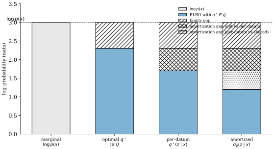
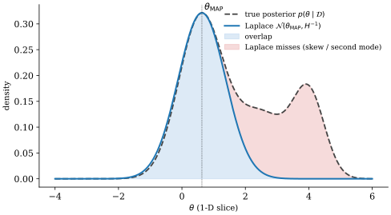
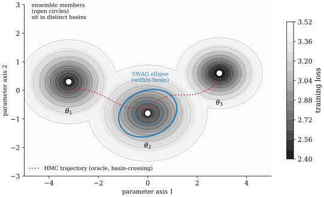

Agenda
The weight posterior of a deep network cannot be computed, and this chapter is four different admissions of that fact. Variational inference replaces the posterior with the nearest member of a family chosen in advance and pays a family gap it cannot measure from the inside (Blei et al. 2017). Markov chain Monte Carlo keeps the posterior exact and pays in serial compute. The Laplace approximation keeps the trained network and adds only curvature at the mode. Trajectory and ensemble methods give up on a posterior object entirely and average predictions instead. The four are presented in that order, each with its own failure mode and its own diagnostic.
The chapter is organised around two results that constrain the whole area. The first is the full-batch HMC study of Izmailov et al. (2021), which is the only place in the literature where the exact posterior of a CIFAR-scale network has been sampled and every cheap method can be scored against it. Its headline is uncomfortable: the exact posterior wins in distribution by about a point and loses under corruption to methods that cost five orders of magnitude less. The second is the argument of Wilson and Izmailov (2020) that deep ensembles are already doing approximate Bayesian model averaging across modes, which reframes the practical question from "how do we make a network Bayesian" to "which part of the posterior is a given method covering".
Read the chapter with that pairing in mind. Accuracy against the true posterior and usefulness of the resulting predictive are different objectives that the benchmarks separate, and most of the design choices covered here (which family, which curvature surrogate, how many members, how much temperature) are choices about which of the two to optimise. The comparison tables and the recipes by compute budget near the end collect the answers; the sections before them explain what each method is actually approximating.
Variational Inference and the ELBO
Variational inference (VI) recasts posterior approximation as optimization. Given an intractable target , pick a parametric family and find the member closest to the posterior in reverse KL divergence. Because reverse KL expands into a log-evidence term that does not depend on , minimizing is equivalent to maximizing a lower bound on the marginal likelihood, the evidence lower bound (ELBO).
Mean-field origins: Jordan, Ghahramani, Jaakkola, Saul (1999)
The earliest coherent machine-learning presentation of variational methods is the tutorial by Jordan et al. (1999),1 which unifies the mean-field treatment of sigmoid belief networks, the Boltzmann machine, and factorial hidden Markov models under a single Jensen-inequality derivation. The authors start from the intractable log-marginal of a latent-variable model
and introduce an arbitrary density to lower-bound it through Jensen's inequality. The result is the ELBO in its original form:
The slack is exactly , so maximizing over simultaneously tightens the bound and produces the best variational posterior. For conditionally conjugate models the authors derive coordinate ascent variational inference (CAVI), in which each factor of a mean-field factorization is updated by
The spirit of the paper is that intractability is almost always structural rather than merely numerical: a tractable graph inside an intractable one can be exploited as a variational skeleton (Jordan et al. 1999).
A few nuances deserve emphasis. First, the reverse KL is mode-seeking: if is multi-modal, typically collapses onto a single mode, which is often a feature (coherent predictions) and sometimes a bug (underestimated variance). Second, the bound is free in the sense that the parameters of and of can be updated jointly, which becomes the EM algorithm when has latent variables and global parameters. Third, the paper already foreshadows structured VI, where retains dependencies; the mean-field assumption is a convenience, not a commitment.
Definition 3.1 (Evidence lower bound). For a model with observables , latents , and variational family , the ELBO is
Equality holds iff almost everywhere.
The operational consequence is that any gain in is a combination of a tighter bound and a better model; teasing the two apart requires an independent estimate of such as AIS or importance sampling, a point too often ignored in deep-VI papers.
The tutorial spends considerable space on the exponential-family case, which is the archetype for conditionally conjugate models. If the joint lies in an exponential family with natural parameters and sufficient statistics , then the optimal mean-field factor also lies in the same family, with natural parameters given by expected natural parameters of the local conditional under . This conjugate-update closedness is what makes CAVI work without any numerical optimization inside the loop; all updates are closed-form in terms of expected sufficient statistics. Deep non-conjugate models break this loop, and the remaining two decades of VI research are substantially about recovering efficiency in the broken case.
A second set of ideas the paper introduces (which will echo through the VAE literature) is variational EM. Treat global parameters of the generative model as point-estimated, alternating between an E-step that optimizes given (a VI problem) and an M-step that updates given (a gradient step on ). In the deep-learning era this alternation collapses into a single joint gradient step on the reparameterized ELBO, but the EM decomposition remains a useful pedagogical ladder: the E-step is posterior inference, the M-step is generative training, and the ELBO is the common Lyapunov.
A third idea, often overlooked, is the convex-dual view of VI. The ELBO is Legendre-dual to the log-partition function of the model's exponential-family representation, and variational methods can be read as approximating an intractable convex optimization by an inner-approximation of its dual polytope. This connects VI to belief propagation (loopy BP is a specific saddle-point iteration on the Bethe approximation of the free energy) and to message-passing algorithms in general. For deep networks the convex view is mostly decorative, but it makes the "VI is inner approximation, BP is outer approximation" dichotomy precise.
A review for statisticians: Blei, Kucukelbir, McAuliffe (2017)
Two decades later, Blei et al. (2017) wrote the canonical modern review of VI, explicitly pitched at statisticians who default to MCMC. The paper's argument is that VI is not an inferior MCMC (it does not converge to the exact posterior), but a different trade-off: optimization instead of sampling, a deterministic objective, and immediate compatibility with modern autodiff.
The review organizes VI along three axes: (i) the variational family (mean-field, structured, hierarchical, normalizing-flow); (ii) the objective (ELBO, -divergence, importance-weighted bound); and (iii) the optimizer (CAVI, score-function gradients, reparameterization gradients, stochastic natural gradients). For exponential-family models with conditional conjugacy, CAVI updates reduce to an analytic expectation-then-natural-parameter step, which is both fast and numerically benign. For non-conjugate deep models the reparameterization route dominates.
A particular contribution is the pathologies section. The authors document that mean-field VI systematically underestimates posterior variance (a consequence of reverse KL), that the ELBO is not a reliable model-comparison criterion absent a matched approximating family, and that practical diagnostics (PSIS, ) are underused in the VI literature. They recommend treating the gap as a first-order model-diagnostic rather than a mere convergence indicator (Blei et al. 2017).
For deep learning, three take-aways are load-bearing. First, the amortization gap (when is parametrized as a neural-network function of rather than freely per-datapoint) is an additional slack on top of the family gap; tight ELBOs require expressive encoders. Second, reparameterization is not the only trick: score-function (REINFORCE) estimators with control variates remain useful for discrete latents. Third, VI's tractable training loss makes it a natural fit for end-to-end deep models where MCMC's serial correlation would kill throughput.
Property 3.2 (Reverse-KL asymmetry). If is multi-modal, the reverse-KL projection concentrates on a subset of the modes; the forward-KL projection spreads across all modes with possibly inflated variance.
This asymmetry is why standard VI on a BNN posterior (which is profoundly multi-modal across permutations and basins) is typically basin-local: the trained approximates a single mode rather than the full posterior.2 Deep ensembles, treated in the SWAG and deep-ensembles section, address exactly this failure.
The Blei review's most underrated chapter is on variance reduction for gradient estimators. Score-function (REINFORCE) gradients of the ELBO take the form
which is unbiased but has high variance because the log-likelihood ratio is a high-variance multiplier on a noisy score. Control variates, Rao-Blackwellization, and baseline subtraction reduce this variance, often dramatically. For the subclass of reparameterizable distributions (location-scale families, inverse-CDF-representable families), the pathwise (reparameterization) estimator replaces the score-function multiplier by a gradient through the sampling path, reducing variance by orders of magnitude in most continuous-latent settings. The deep-learning literature has internalized reparameterization almost to the exclusion of score-function gradients, but for discrete or structured latents (attention weights, tree-structured priors, Bernoulli latents) the score-function path is still the only generic option; continuous relaxations (Gumbel-Softmax, Concrete distribution) can fill the gap at the cost of bias.
The paper ends on a skeptical note, paraphrased here. VI solves an optimization problem in a predetermined family. If the true posterior does not lie in (or near) that family, no amount of data will save the approximation. This is a different failure mode from MCMC, which consistently estimates the true posterior given enough time. Choosing between VI and MCMC is therefore not "speed vs accuracy" but "different biases"; for deep learning, the implicit claim is that VI's biases are "acceptable" on downstream tasks, a claim that Ovadia et al.'s dataset-shift benchmark, read in the head-to-head section on dataset shift, largely disputes for modern classifiers.
Stochastic variational inference: Hoffman, Blei, Wang, Paisley (2013)
The SVI paper (Hoffman et al. 2013) is the bridge from classical VI to modern deep VI. Its central insight is that CAVI's natural-gradient update in a conditionally conjugate exponential family has a closed-form expression in terms of sufficient-statistic expectations, and that these expectations decompose as sums over data points. Therefore a minibatch produces an unbiased stochastic natural gradient of the ELBO, and Robbins-Monro updates converge to the CAVI fixed point.
Concretely, for global parameters and local latents , SVI alternates:
with step size satisfying , . The scaling factor is the standard minibatch upweighting so that the expected natural gradient targets the full-data ELBO.
Why this matters for deep learning. SVI's decomposition is the template for every minibatch-trained amortized-VI system: the ELBO decomposes as , and a minibatch estimate is unbiased. Scaling to LDA on 3.3M Wikipedia articles, the SVI paper showed that VI can be streaming, competitive on held-out perplexity with per-document MCMC at a small fraction of the compute (Hoffman et al. 2013). The same architecture choice (global + local + amortization) is the skeleton of the VAE (Kingma and Welling 2014).
A subtlety often glossed over: the natural-gradient update is parameter-invariant, which means SVI is immune to the Fisher-rotation pathology that afflicts naive gradient-descent VI. In deep models where the variational family is a deep network, natural-gradient SVI is typically approximated via diagonal Fisher preconditioners (KFAC, Adam with fixed statistics), trading invariance for speed.
The convergence theory underlying SVI is Robbins-Monro stochastic approximation: for step-size schedules with , the iterates converge almost surely to a stationary point of the ELBO. The rate is in expected squared distance to the optimum, so close to 1 gives the fastest asymptotic rate but is sensitive to initial conditions. The paper recommends and for robustness; modern deep-VI literature typically uses adaptive step sizes (Adam) that abandon the Robbins-Monro guarantees in exchange for practical efficiency.
Three architectural legacies of SVI in the deep-VI era deserve explicit naming. First, the split into global parameters (shared across data) and local parameters (per-datum) is the same split as decoder-vs-latents in the VAE. Second, the amortization of local parameters (replacing per-datum by a shared function ) turns SVI into a single-pass minibatch algorithm, eliminating the inner loop; this is the VAE's signature move (Kingma and Welling 2014). Third, the streaming property of SVI (unbiased gradients from a single datapoint) generalizes to any amortized-VI method as long as the ELBO decomposes additively, which is the case whenever the likelihood factorizes over data.
A subtle practical point: the minibatch-gradient noise in SVI is not the only source of stochasticity. The local-update step is typically an expectation under , which itself must be estimated (by sampling or by a closed-form for conjugate families). For non-conjugate deep models, both expectations are estimated by Monte Carlo, and the resulting doubly-stochastic gradient has higher variance than a "pure" minibatch gradient. The sticking-the-landing estimator (Roeder et al. 2017) cancels the score-function component of the pathwise gradient when evaluated at the optimum, reducing variance to zero there and materially improving convergence near convergence.

The mean-field Gaussian BNN in detail
Before moving to the VAE, this section works out the mean-field Gaussian BNN (which (Blundell et al. 2015) calls "Bayes by Backprop") as a concrete instance of VI for weights. Place an isotropic-Gaussian prior and a diagonal-Gaussian variational family parametrized by with (softplus, to enforce positivity). The ELBO is
The KL is closed-form for Gaussian-to-Gaussian; the likelihood term is estimated by reparameterized Monte Carlo with a single sample per minibatch. The minibatch form is
where the factor is the standard SVI upweighting.
Two practical points. First, the KL term is in the number of parameters but scales linearly with training epochs; early in training, the KL dominates the ELBO and can push toward the prior (prior collapse of weights), which is why KL-warmup is standard. Second, the variance of the gradient estimator is high because a single weight sample is shared across the whole minibatch; local reparameterization (Kingma-Salimans-Welling 2015) samples a different effective weight per data point by sampling pre-activations directly, reducing gradient variance by an order of magnitude.
A subtle point about mean-field BNNs: the independence assumption across weight dimensions is profoundly wrong for neural networks. Weights within a layer are correlated through the task structure; weights across layers are correlated through the training dynamics; weights within a neuron are correlated through the neuron's role. Capturing these correlations via structured-variational-posterior methods (matrix-variate Gaussians, full-covariance via factorized low-rank, flows) materially improves performance but is rarely deployed due to engineering cost.
Tight bounds, cold posteriors, and the amortization gap
A tight ELBO is not a good posterior. The central danger of treating the ELBO as a quality metric is that a family can achieve a near-tight bound while placing negligible mass on regions that matter downstream (adversarial robustness, tail risk, calibration under shift). The evaluation criterion should match the use case, not the training loss. This concern is sharpened by diagnostic evidence: Pareto-smoothed importance sampling tracks whether covers the posterior's tails by fitting a generalized Pareto to the importance-ratio tail, and its shape parameter is a red flag once it exceeds . Chi-squared bounds, -divergences, and importance-weighted ELBOs (IWAE) offer alternative objectives with different bias/variance trade-offs; the fact that reverse-KL is the default is a matter of computational convenience, not statistical virtue.
A second cluster of pathologies concerns cold posteriors and KL scheduling. BNNs with Gaussian variational posteriors often need a cold-posterior correction (temperature in front of the likelihood) to match SGD-level accuracy (Wenzel et al. 2020); the debate about whether this reflects prior misspecification or data-curation artefact is ongoing. KL annealing (the VAE's analogue of learning-rate warm-up, ramping the KL coefficient from 0 to 1 over the first few epochs) mitigates posterior collapse but biases the ELBO during ramp-up, so any per-step bound must be read in that light. The "correct" ELBO under data augmentation is also unclear: naive repetition of augmented inputs inflates the effective dataset size and biases the evidence (see Nabarro et al. 2022 for a formalization).
The amortization gap is real, measurable, and often large. Cremer-Li-Duvenaud (2018) show that replacing with per-datum SGD at test time can tighten the ELBO by more than 20% in tight-family settings, and measure typical gaps of to nats per dimension on natural-image benchmarks. Encoder capacity helps; iterative amortization helps more. Beyond amortization the family gap itself usually dominates: the posterior over BNN weights is strongly anisotropic, mean-field Gaussians assume isotropy per-parameter, and normalizing-flow posteriors (Rezende and Mohamed 2015) consistently reach PSIS values in the - range where mean-field sits at - on the same datasets (at a - encoder-forward slowdown).
Several practical hazards sit beneath the objective itself. ELBO estimators are noisy, and low-variance estimation of needs care; the sticking-the-landing estimator and Rao-Blackwellization reduce variance without introducing bias. Reparameterization-gradient variance grows with depth (the pathwise gradient accumulates like a random walk), so analytic reparameterization (passing moments through the network) becomes a variance-reduction tool for deep hierarchies; score-function estimators (REINFORCE with NVIL- or VIMCO-style baselines) remain competitive for structured or discrete latents. Natural-gradient VI with full-covariance Fisher preconditioning converges in far fewer steps than plain gradient VI at the cost of per-step linear solves. Initialization matters: a Gaussian started at the prior carries high KL throughout training, while warm-starting at an SGD iterate with small variance is the standard recipe. Finally, if the variational family overlaps with the generative-model parameter space, gradient leakage between them can induce asymptotic bias.
A useful running diagnostic late in training is the ratio of expected log-likelihood to entropy of ; this reveals whether the model is still data-fitting (likelihood dominates) or already variance-shrinking (entropy dominates).
Remark 3.3 (The "VI tax"). Every additional structural assumption that tightens the family costs either computation (flows, mixtures) or modelling work (hierarchical ). For deep models this tax is worth paying only when downstream uncertainty is the product: pure test accuracy rarely improves.
An elaboration on diagnostics. The Pareto-smoothed importance sampling (PSIS) diagnostic of Vehtari-Gelman-Gabry (2017) fits a generalized-Pareto distribution to the upper tail of the importance ratios and reports the shape parameter . Values indicate that the variational approximation is safe for importance-reweighting; values in indicate marginal safety; values indicate that the variational posterior's tails are too light relative to the true posterior, and importance reweighting cannot rescue it. In the VAE literature, estimates on typical natural-image VAEs are often in the - range, indicating that the posterior approximation is poor on most datapoints, even though the ELBO is reasonable in absolute terms. This diagnostic gap, under-reported in the VAE literature, is one of the reasons to treat VAE "posterior inference" with caution as a Bayesian tool.
Normalizing-flow posteriors achieve substantially better PSIS values than mean-field, typically in the - range on the same datasets. This is quantitative evidence that the family gap dominates the amortization gap on these benchmarks. Flow-based VAE posteriors are therefore preferable for any downstream use that treats the ELBO as an approximation to , at the cost of a - slowdown in encoder forward passes.
Structured and hierarchical VI
Mean-field VI is the simplest variational family but rarely the best. Three generalizations are standard in modern deep-VI work.
Structured mean-field keeps factorization but groups dimensions that are known to be correlated. For a BNN, weights within a neuron are correlated through the neuron's functional role; a matrix-variate Gaussian captures this with a Kronecker-factored covariance at cost rather than the of full covariance (Louizos and Welling 2017).
Hierarchical VI introduces auxiliary latents and builds a joint . The ELBO gains a term that accounts for the additional slack. Properly done, this lets approximate multimodal or heavy-tailed posteriors that mean-field cannot.
Normalizing-flow VI parametrizes as a base Gaussian composed with a sequence of invertible, differentiable maps. The log-density is computed via the change-of-variables formula, and reparameterized gradients flow through the entire stack. Rezende-Mohamed (2015) introduced planar and radial flows; modern families (RealNVP, Glow, neural spline flows) are dramatically more expressive. For BNN posteriors, multiplicative normalizing flows (Louizos and Welling 2017) have become a standard option when mean-field is too rigid.
The unifying view is that every choice of trades expressivity (can contain the true posterior?) against tractability (can we evaluate and sample from efficiently?). Mean-field is maximally tractable but weakly expressive; flows are maximally expressive but costly. The VI literature's direction of travel is toward richer at the cost of compute, with normalizing flows as the current frontier for weight posteriors.
VAE as Amortized Variational Inference
The variational autoencoder (VAE) is the signature application of VI to deep learning: a global generative model with a deep decoder, and an amortized inference network that shares parameters across all datapoints. The inference network is the encoder; the generative network is the decoder; the two are trained jointly by reparameterized gradients on a single scalar loss.
The generative-models book owns the training recipe and the generative evaluation of VAEs. Here we stay on the posterior-inference angle: what does the VAE buy us as an approximate-Bayesian method, what does it cost, and what are the failure modes in that light. See Generative Models book for the generative side.
The VAE's generative-model formulation
The VAE's generative model is
with a prior that is typically standard Gaussian, a decoder that factorizes over the observation's coordinates, and a likelihood family (Bernoulli for binary data, Gaussian for continuous, categorical for discrete) chosen to match the observation type. The posterior is intractable because the decoder is a deep nonlinear function; this is the intractability that amortized VI addresses.
A philosophical point: the VAE as a generative model commits to a specific factorization ( causes , not vice versa). The generative story is that we sample from the prior, push it through a deterministic or stochastic decoder, and observe plus noise. This is a deep commitment; it rules out denoising interpretations in which is perturbed to produce . The implications for identifiability are severe: any invertible transformation of induces an equivalent model with different decoder, so the latent space is only identifiable up to such transformations; "disentanglement" without inductive bias is therefore unidentifiable (Locatello et al. 2019).
Auto-Encoding Variational Bayes: Kingma & Welling (2014)
Kingma and Welling (2014) combined three ideas into a single paper that now defines the field: (i) amortized VI via a single recognition network ; (ii) the reparameterization trick for pathwise gradients through stochastic nodes; and (iii) a Gaussian-prior, Gaussian-encoder, Bernoulli-or-Gaussian-decoder instantiation that trains end-to-end with SGD.
The per-datapoint ELBO takes the reparameterized form
where with . The reconstruction term is estimated by a single Monte Carlo sample through the reparameterized encoder, and the KL term is closed-form when both prior and encoder are Gaussian:
The reparameterization rewrite turns an expectation over the parameter-dependent measure into an expectation over a parameter-free measure composed with a differentiable map. The Monte Carlo estimator then has pathwise variance rather than the score-function variance of REINFORCE, and in most continuous-latent regimes the former is dramatically smaller.
From an approximate-Bayesian standpoint, the VAE is a mean-field diagonal-Gaussian VI approximation of with an amortization constraint that is a fixed neural network, not a free parameter per . Three kinds of slack stack: the usual family gap, the amortization gap, and the approximation gap from the decoder being itself learned. Modern variants (IWAE, semi-amortized VI, normalizing-flow posteriors) attack each of these.
Derivation sketch of the reparameterization trick. The ELBO's reconstruction term is ; its -gradient requires pushing a derivative through an expectation whose measure depends on . Two tricks exist: score-function (REINFORCE) and pathwise (reparameterization). If for a -independent noise distribution and differentiable in , then
which is the pathwise estimator. For Gaussian , with , and the -gradient flows through both and via standard backprop. The variance of the pathwise estimator scales with the Lipschitz constant of and is typically far lower than the score-function variance, which scales with the magnitude of itself.
A canonical bug in VAE training is variance explosion in the encoder's head. If is parametrized as and is unclipped, the KL term drives on some latents (posterior collapse) or on others (latent noise swamping the signal). The standard fix is to clip to and to add KL-annealing during the first few epochs. A more principled fix is to use a free-bits variant that imposes a per-latent floor on the KL.
The VAE as a rate-distortion optimizer. The ELBO can be rewritten as
where is the distortion (reconstruction negative-log-likelihood) and is the rate (KL from the encoder to the prior). This decomposition is a rate-distortion trade-off in the information-theoretic sense: the VAE finds a point on the Shannon rate-distortion frontier of the data distribution. The -VAE (Higgins et al. 2017) makes this trade-off explicit by scaling ; variational information-bottleneck models (Alemi et al. 2017) further elaborate this view.
Stochastic backprop: Rezende, Mohamed, Wierstra (2014)
In parallel, Rezende et al. (2014) derived the same reparameterization machinery from a stochastic-backpropagation point of view, emphasizing that the trick is an instance of the general pathwise derivative (a.k.a. infinitesimal-perturbation-analysis) estimator for expectations over reparameterizable distributions. They generalized beyond Gaussians to any location-scale family and derived rules for deeper stochastic graphs, including recognition networks with structure in the latent space.
Two contributions from this paper are load-bearing. First, the rules for stacked stochastic layers, which justify hierarchical VAEs and normalizing-flow posteriors as special cases. Second, the natural-gradient version of the reparameterization estimator, which preconditions the encoder's update by its Fisher information; this is the theoretical basis for natural-gradient VAE variants like NVAE's Gauss-preconditioner.
Read as a posterior-inference paper, Rezende et al. also make a cautionary point: the encoder is an amortized approximator that can fail when the data density and the prior density are sharply mismatched. The pathologies show up as holes in the aggregate posterior , which in turn produce poor samples from the prior. This is the deep motivation for aggregate-posterior matching (VampPrior, learned priors) in later work.
The paper also connects the objective to denoising autoencoders. If is Gaussian and the encoder's mean is small-noise perturbed to , the Rezende-Mohamed-Wierstra objective reduces in the zero-noise limit to a denoising autoencoder. This is one of the earliest explicit bridges between (deterministic) representation-learning autoencoders and (stochastic) generative autoencoders; it also explains why a VAE with a very flat behaves, in practice, like a denoising autoencoder with Gaussian noise on the latent.
A final point from Rezende et al. is the sampling graph for multi-level latents. For a hierarchical VAE with latents and conditional Gaussian encoders, the reparameterization chain is
and the ELBO's KL term decomposes as . This compositional structure is why modern hierarchical VAEs (NVAE, VDVAE) can reach FID levels competitive with autoregressive generators on natural images; see Generative Models book for the generative treatment.
-VAE: Higgins et al. (2017)
Higgins et al. (2017) modify the VAE objective to
with encouraging the encoder to compress more aggressively. Empirically, on controlled datasets (2D shapes, CelebA, Chairs) this tilts the latent space toward axis-aligned disentangled factors: a single latent controls rotation, another controls scale, and so on. The paper's interpretation is information-theoretic: is a Lagrangian tightening of the bottleneck in the rate-distortion picture of VAEs.
For the posterior-inference reader there are two take-aways. First, is a principled knob only when one commits to the rate-distortion interpretation; as a pure ELBO modification it is a biased objective and not a lower bound on any standard marginal likelihood. Second, the disentanglement claim is fragile: Locatello et al. (2019) show that without inductive bias, disentanglement metrics are essentially unidentifiable. The scholarly reading is that -VAE is a useful probe into the rate-distortion trade-off of VAEs, not a universal disentanglement algorithm.
Remark 3.4 ( as a prior-mismatch knob). For , is exactly the ELBO of a tempered model with likelihood raised to the power . It is thus a lower bound, but on a tempered evidence, not on the original one. This is a clean way to reconcile -VAE with the rest of the VI literature.
IWAE and the tightening of the bound
Burda et al. (2016) introduced the importance-weighted autoencoder (IWAE), which replaces the single-sample ELBO with a multi-sample lower bound:
is a strictly tighter lower bound on for , with and as . The IWAE bound is cheap to estimate (just encoder forward passes and a log-sum-exp) and substantially tighter than the plain ELBO on standard benchmarks.
A subtle issue: the IWAE gradient w.r.t. the encoder degrades as grows. Rainforth et al. (2018) show that the encoder gradient's signal-to-noise ratio scales as , so increasing can slow the encoder's convergence. The DReG estimator (Tucker et al. 2019) rescues the encoder-training regime by using a doubly-reparameterized gradient that has favorable SNR scaling. This is a representative example of the deep nuances that must be traded off when going beyond the plain ELBO.
Posterior collapse, OOD overconfidence, and the VAE's identifiability deficit
Posterior collapse is the signature failure mode of modern VAEs. When the decoder is expressive enough to model the data on its own (autoregressive or PixelCNN-like), the encoder collapses to the prior, the KL term vanishes, and the model ignores entirely. The standard mitigations (KL annealing, free bits, skip connections from latent to output, deliberately weakened decoders) each buy partial relief at a specific cost. An adjacent hazard is on the decoder side: when is Gaussian with a learned variance, the model can place vanishing variance on training points and blow up the log-likelihood, so a fixed or lower-bounded is the standard defensive hack. The reconstruction-versus-KL ratio is a model-design knob in its own right (low-variance Gaussian decoder pushes reconstruction dominance; high-variance pushes KL dominance) and choosing the right decoder variance is often more consequential than choosing the prior or the encoder family. Cold-posterior scaling of the KL term recurs here as well: it can match SGD accuracy at the price of an explicitly biased Bayesian interpretation.
The amortization gap is measurable and the IWAE bound is strictly tighter. Replacing by steps of per-datapoint SGD at test time (semi-amortized VI) tightens the ELBO by to nats per dimension on natural-image benchmarks. The importance-weighted VAE with samples replaces by and is strictly tighter than the ELBO at the cost of encoder evaluations. Several smaller engineering points compound: ReLU trunks feeding a Gaussian mean/variance head produce that is poorly calibrated near data boundaries (GELU and swish are quieter), and the classical AEVB recipe (shallow MLP encoder-decoder with two Gaussian latents) has been superseded in image modelling by 30+ layer hierarchical VAEs with spectral normalization, swish activations, and learned priors; the algorithmic skeleton (reparameterized ELBO) is unchanged.
The standard diagnostic triad is active-unit count (fraction of latents with KL above some ), aggregate-posterior KL, and PSIS computed on the importance ratio . Each reports a different pathology: collapsed latents, holes in relative to , and tail-coverage failure of . Holes in the aggregate posterior are why prior samples from VAEs are often worse than posterior samples: regions of that lie outside the support of decode to garbage.
Identifiability concerns temper VAE-as-Bayesian-tool claims. The encoder is not identified: multiple encoders produce the same ELBO, and is identified only up to transformations that preserve decoder predictions. The ELBO lower-bounds the model's log-likelihood under its own generative assumption, so comparing VAE "log-likelihoods" against the exact log-likelihoods of autoregressive models is not apples-to-apples. Most striking is the finding (Nalisnick et al. 2019) that VAE log-probability assigned to OOD images is often lower than that assigned to in-distribution images: the encoder can map OOD inputs to high-probability regions of , inflating reconstruction likelihood. VAEs are therefore not reliable density estimators for OOD detection without further correction. The VAE's is also a posterior over latents, not weights; a BNN VAE that combines both exists but is expensive and rarely used.
Two variants sidestep these hazards along different axes. Conditional VAEs marginalize over the label explicitly, producing a principled per-class posterior that helps in semi-supervised settings. VQ-VAE replaces the Gaussian latent with a vector-quantized categorical latent and drops the KL term entirely; the resulting model has no proper ELBO but buys sharper samples and easier autoregressive priors. Training details, FID scores, and architecture search live in the Generative Models book; here we treat the VAE as a posterior-inference prototype.
| Variant | Family | Amortization | Gradient estimator |
|---|---|---|---|
| Mean-field CAVI (Jordan et al. 1999) | Factorized conjugate | Per-datum | Closed-form natural |
| SVI (Hoffman et al. 2013) | Factorized conjugate | Per-datum | Stochastic natural |
| Black-box VI (Ranganath et al. 2014) | Arbitrary (REINFORCE) | Either | Score-function |
| VAE (Kingma and Welling 2014) | Gaussian mean-field | Amortized | Reparameterization |
| IWAE (Burda et al. 2016) | Gaussian mean-field | Amortized | K-sample IS |
| Normalizing-flow VI (Rezende and Mohamed 2015) | Flow on base Gaussian | Amortized | Reparameterization |
| -VAE (Higgins et al. 2017) | Gaussian mean-field | Amortized | Reparameterization |
VI for deep learning: a taxonomy
Collecting the threads of this chapter, the VI choices for a deep model can be organized on three axes:
- What is the latent? A per-datum latent (VAE), a global parameter (BNN), or both (hierarchical model with both).
- What is the family? Mean-field Gaussian (simplest), structured (matrix-variate, KFAC), flow-based (most expressive), or implicit (adversarial VI).
- What is the objective? The ELBO, the IWAE bound, an -divergence, or a specialized bound (Stein VI, amortized MAP with a deterministic decoder).
| Axis / Choice | Per-datum latent | Global parameter | Both |
|---|---|---|---|
| Mean-field Gaussian | VAE | Bayes-by-Backprop | Hierarchical mean-field |
| Structured (KFAC, matrix-variate) | Hierarchical VAE | KFAC-Laplace (post-hoc) | Structured hierarchical VAE |
| Normalizing-flow | Flow posterior VAE | Multiplicative NF BNN | Deep flow-based VI |
| Implicit | Adversarial VAE | GAN-based BNN | Particle-based VI |
A meta-observation: most published deep-VI work lives in a surprisingly small subset of this design space (mean-field Gaussian VAE or BBB, plus flow-based posteriors). The bulk of the cells are underexplored, partly because the engineering cost of implementing them outweighs the typically modest gains on standard benchmarks. An exception is hierarchical VAE (NVAE, VDVAE), which dominates likelihood-based image generation and justifies its complexity.
Hamiltonian Monte Carlo and SG-MCMC
MCMC is the other road to posterior approximation: instead of optimizing a family, build a Markov chain whose stationary distribution is the exact posterior. For BNNs, the chain lives in the weight space with in the tens-of-millions or higher, which rules out most random-walk proposals. Two families scale: Hamiltonian Monte Carlo, which uses gradient information to propose informed moves, and its stochastic-gradient variants, which exchange the Metropolis-Hastings correction for minibatch efficiency.
Neal (2011): MCMC using Hamiltonian dynamics
Neal (2011) wrote the canonical tutorial on Hamiltonian Monte Carlo (HMC), and for BNNs it remains the reference against which the cheap methods are scored. HMC augments the state with an auxiliary momentum variable drawn from with mass matrix , and simulates Hamiltonian dynamics on the potential energy :
A leapfrog integrator with step size and steps produces a proposal , accepted with probability . Because Hamiltonian flow preserves the joint density exactly in continuous time, the Metropolis-Hastings correction compensates only for the integrator's discretization error, which scales as per step.
The spirit of HMC is that a gradient-informed proposal with step size tuned by the local curvature can move a long distance without rejection, in contrast to random-walk Metropolis whose mixing scales as in dimension. With No-U-Turn tuning (NUTS) the path length is chosen automatically to avoid double-backs, and with a well-chosen mass matrix the chain mixes in hundreds rather than millions of steps (Neal 2011).
For deep learning, HMC's Achilles heel is the requirement of an exact gradient over the full dataset at each leapfrog step: a BNN with training points and leapfrog steps costs forward-backward passes per sample, which is prohibitive. This cost is the direct motivation for stochastic-gradient MCMC.
The leapfrog integrator for HMC alternates half-steps in and full-steps in : This splitting is symplectic (volume-preserving) and time-reversible, two properties essential for the Metropolis-Hastings correction: the proposal kernel is its own reverse, so the acceptance ratio simplifies to a single energy difference. A non-symplectic integrator would require evaluating Jacobian determinants at each step, destroying the method's efficiency.
An important tuning dimension is the mass matrix . If the posterior has anisotropic scales (which is the default for BNN weights: bias scales differ from weight scales, early-layer scales differ from late-layer scales), leads to pathological step-size choices. Mass-matrix estimation from warm-up samples, or layer-wise diagonal mass matrices, dramatically improves mixing. The BNN-scale exception is Izmailov et al.'s full-batch HMC study, which keeps the identity mass matrix and buys mixing with compute instead: roughly one posterior sample per hour on 512 TPUv3 devices (Izmailov et al. 2021).
A subtle observation: HMC's acceptance rate is not a mixing diagnostic.3 High acceptance (say 99%) means proposals are close to current state, which means small and slow mixing. The optimal acceptance rate is about 65% for a leapfrog HMC in high dimension (Beskos-Pillai-Roberts-Sanz-Serna-Stuart 2013), a rate that balances acceptance probability against per-proposal distance. Practitioners who tune toward 99% acceptance are wasting their compute.
SGLD: Welling & Teh (2011)
Welling and Teh (2011) proposed Stochastic Gradient Langevin Dynamics (SGLD), the simplest non-trivial stochastic-gradient MCMC algorithm. Take the Langevin SDE
discretize with Euler-Maruyama at step size , and replace the full-data gradient by a minibatch estimate based on :
The observation that carries the method is that as , the Metropolis-Hastings correction becomes unnecessary: the ratio of minibatch-gradient-noise variance to injected-Gaussian-noise variance shrinks with (the former scales as , the latter as ), so for small enough steps the minibatch noise is dominated and the chain targets the correct posterior in the vanishing-stepsize limit (Welling and Teh 2011). The price is a decaying step-size schedule with , which in turn means the effective sample size per wall-clock hour decays with .
A subtle but important point: at any fixed , SGLD does not target the exact posterior; it targets a perturbed distribution whose variance is inflated by the minibatch noise. Practitioners who run SGLD at constant step size are implicitly trading bias for mixing speed, and the bias is often not small.
The asymptotic analysis in Welling and Teh runs as follows. Write the minibatch gradient as , where is zero-mean minibatch noise with covariance (by a CLT argument on minibatch sampling). The SGLD update becomes
where the bracketed term has covariance . For , the injected-noise term dominates the minibatch-noise term, recovering Langevin dynamics. At finite , the stationary distribution is offset by from the posterior; this is the quantity that cyclic-SGLD and SG-HMC aim to reduce.
Relation to SGD. SGLD with zero injected noise is exactly SGD; SGD with injected Gaussian noise and decaying step size is exactly SGLD. The phase transition between "SGD mode" (small , chain concentrates on MAP) and "sampling mode" (larger , chain explores posterior) happens around the scale where injected noise matches curvature scale. Smith-Le (2018) and Mandt-Hoffman-Blei (2017) have formalized this as SGD-as-approximate-Bayesian-inference: at a constant learning rate, SGD with momentum has a stationary distribution that is about Gaussian, with covariance determined by the gradient-noise and curvature.
SG-HMC: Chen, Fox, Guestrin (2014)
Chen et al. (2014) closed the gap between HMC and SGLD by introducing a friction term that compensates for the minibatch-gradient noise. The stochastic-gradient HMC (SG-HMC) dynamics are
with friction matrix and estimated minibatch-noise covariance . The key theorem of the paper is that if , the stationary distribution is still the posterior, even though the gradient is a noisy minibatch estimate. In discrete time this reduces to a momentum-SGD with Gaussian noise added explicitly, a template that several later papers (SGNHT, pSGLD) extend with mass-matrix adaptation and thermostat variables (Chen et al. 2014).
Operationally, SG-HMC looks almost identical to momentum SGD: a velocity variable integrates gradients, with friction acting like weight decay on , and Gaussian noise injected at each step. For practitioners this makes SG-HMC a drop-in replacement for SGD when one wants posterior samples rather than a point estimate, with the caveat that step size and friction must be tuned carefully.
Theorem 3.5 (SG-HMC stationarity, informal). If the minibatch gradient has covariance (about) and the friction satisfies , then the discretized SDE above has the posterior as its (approximate) stationary distribution, with bias vanishing as step size .
What are BNN posteriors really like? Izmailov et al. (2021)
Izmailov et al. (2021) ran full-batch HMC (not SG-MCMC) on CIFAR-10 and IMDB-scale BNNs.4 The resulting samples approximate the exact posterior to within HMC's (very tight) numerical tolerance, and the paper uses them as a ground-truth reference against which cheaper approximations are measured.
Four findings stand out, and two of them run against what the field expected. First, on CIFAR-10 the exact posterior reaches 89.6 percent test accuracy against 88.5 for a deep ensemble, 89.3 for SGLD, 86.5 for mean-field VI and 83.4 for a single SGD run, so the ordering in-distribution is the expected one but the margin over the cheap methods is around a point. Second, that ordering inverts under corruption: deep ensembles and SGLD are consistently more robust on CIFAR-10-C than the HMC posterior, and at high corruption intensity even a single SGD model beats the HMC ensemble. Third, the cold-posterior effect does not appear in their runs, and when data augmentation is switched off they observe no cold-posterior effect at all, which is direct evidence for the augmentation-as-likelihood-misspecification hypothesis rather than for a defect in Bayesian inference. Fourth, and against the usual worry about weight priors, the Bayesian model average they obtain is largely insensitive to the prior: performance changes little across Gaussian prior scales spanning an order of magnitude, and little again when the Gaussian is swapped for a mixture-of-Gaussians or a logistic prior (Izmailov et al. 2021). Prior-scale sensitivity is reported for the cheaper approximations rather than for the HMC oracle (Wenzel et al. 2020), a difference that should be read as a statement about the approximations as much as about the prior.
For this chapter the take-away is two-sided. HMC is the oracle in-distribution, and every cheap approximation leaves about a point of accuracy on the table, but the oracle is not the best choice under shift, so "closer to the exact posterior" and "better deployed model" are different objectives. Ensembling a handful of cheap approximations remains the practical middle ground, which is SWAG plus ensembling as set out in the SWAG and deep-ensembles section.
| Method | Test accuracy | Robust under CIFAR-10-C | Cost (relative) |
|---|---|---|---|
| Full-batch HMC | 89.6% | worst of the five | 60M SGD-epoch equiv. |
| Deep ensembles (5) | 88.5% | best | ~5x single training |
| SGLD | 89.3% | best (with ensembles) | ~1-2x single training |
| Mean-field VI (BBB) | 86.5% | middle | ~1-1.5x single training |
| Single SGD baseline | 83.4% | beats HMC at severity 5 | 1x |
NUTS and the No-U-Turn criterion
Hoffman & Gelman (2014) extended HMC with the No-U-Turn Sampler (NUTS), which automatically chooses the leapfrog path length by terminating when the path starts to reverse direction, i.e., when the inner product of current momentum and the difference from starting position becomes non-positive:
NUTS removes one of HMC's three main tuning dimensions (path length), leaving only step size and mass matrix; a dual-averaging scheme during warm-up tunes the former to hit a target acceptance rate. NUTS is the default in Stan and PyMC, and it is effectively the standard for HMC on BNNs when HMC is used at all. Izmailov et al.'s full-batch HMC on CIFAR instead hand-tunes a fixed step size () and a fixed trajectory length, which at that step size works out to roughly leapfrog steps per sample, with an identity mass matrix (Izmailov et al. 2021). NUTS is impractical at that compute scale since its doubling procedure already multiplies cost by 2-4 per iteration.
Step-size bias, mode coverage, and the cold-posterior debate
SG-MCMC bias is the first thing a practitioner must account for. At any fixed , the stationary distribution of SGLD is not the posterior; it is a perturbed distribution whose variance is inflated by minibatch-gradient noise, and the bias can be substantial in heavy-tailed posteriors. MALA (Metropolis-adjusted Langevin) removes the bias at fixed but pays for it with a full-data log-prob per step, which is impractical at BNN scale. More useful in practice are variance-reducing devices: diagonal preconditioning (pSGLD with RMSprop-style statistics) dramatically accelerates mixing in anisotropic posteriors, and the stochastic-gradient Nose-Hoover thermostat (SGNHT) replaces the fixed friction of SG-HMC with an adaptive temperature variable that cancels minibatch-gradient noise without requiring a known . Pure gradient-free MCMC (random-walk Metropolis, slice sampling) is completely impractical at modern scales; gradient information is essential.
Single-chain SG-MCMC stays in one basin. Cyclic SGLD (Zhang et al. 2020) addresses this by repeatedly cycling through large-step exploration and small-step exploitation phases, improving mode coverage in multi-modal BNN posteriors. Replica exchange and parallel tempering are the high-end alternative for multi-modal sampling; they are rarely used on BNNs due to compute cost. The gold-standard convergence diagnostic is running chains and monitoring across them, which in the BNN setting means independent initializations, i.e., the deep-ensemble recipe in disguise. Autocorrelation time is the effective currency: with samples and autocorrelation time one has only effective samples, and for BNNs can be in the thousands. Warm-up length should scale with problem dimension, so for high-dimensional BNN posteriors warm-up is often as long as production sampling, and the stationarity assumption is rarely genuinely tested in practice; short-chain "posterior samples" are biased toward the initialization.
Tuning HMC well is mostly about curvature. Mass-matrix adaptation is the lever: HMC with an estimated diagonal mass matrix matches posterior scales along each dimension, and in BNNs layer-wise diagonal mass matrices are a cheap and effective compromise. Riemannian HMC uses the Fisher as a position-dependent mass matrix and justifies its substantial overhead only in difficult geometries. Leapfrog numerical error is per step and can accumulate over steps into measurable acceptance-rate drops for very deep BNNs at small . The standard mixing-diagnostic triad is across chains, effective sample size (ESS), and posterior-predictive checks. Reversible-jump MCMC extends HMC to variable-dimension problems such as variable-width networks but is unused for fixed-architecture BNNs.
The cold-posterior effect refuses to go away.5 A temperature in front of the likelihood improves accuracy at the expense of exact Bayesian interpretation; whether this reflects prior misspecification, augmentation-likelihood misspecification, or something deeper is unresolved (Wenzel et al. 2020). Under full-batch HMC the effect disappears once data augmentation is switched off (see the Izmailov oracle discussion above), which narrows the live explanations to the likelihood-misspecification family rather than settling the question. Tempered SG-MCMC variants combine cold-posterior scaling with replica exchange to escape local modes, but they remain research-grade tools rather than default practice.
Operationally the dominant cost is memory. HMC chains are expensive to store: 100 samples of a ResNet-50 take roughly 10 GB, so the standard practice is to thin aggressively to effective samples and average predictions online rather than persist all samples. The Izmailov et al. HMC oracle ships pickled samples publicly, and follow-up work routinely uses them to calibrate cheaper methods without paying the TPU bill.
Cyclic SG-MCMC and mode coverage
Standard SGLD and SG-HMC, run from a single initialization with monotonically decaying step size, tend to stay within a single basin of the posterior. Zhang et al. (2020) introduced cyclic SG-MCMC, which repeatedly cycles the step size between a large exploration phase (which crosses basins) and a small sampling phase (which collects samples within a basin). The cyclic schedule
(with total iterations, cycles) produces a chain that explores multiple modes within a single run. Empirically, cyclic SG-MCMC matches or exceeds deep ensembles on CIFAR-level NLL at cost, making it a competitive cheap alternative.
The trade-off is that cyclic SG-MCMC's samples are correlated within a cycle but diverse across cycles, mirroring the ensemble-vs-SWAG picture. Within-cycle samples act like SWAG's within-basin samples; across-cycle samples act like ensemble members. The effective ensemble size is (the number of cycles), so to is the standard range.
SG-MCMC with control variates
A separate thread of work (Baker-Fearnhead-Fox-Nemeth 2019) uses control variates to reduce the minibatch-gradient variance in SG-MCMC. The idea is that after a warm-up phase, the MAP is known, and the minibatch gradient at is zero in expectation. Subtracting the minibatch gradient at (a control-variate offset) from the current-state minibatch gradient produces an estimator with much smaller variance. In the limit where the posterior concentrates around , the control-variate SGLD becomes unbiased even at fixed , eliminating the step-size bias that plagues standard SGLD.
The catch is that evaluating the control-variate at requires an extra full-data gradient pass once; the per-step cost is unchanged, but memory use doubles (we need both minibatch gradients). For BNNs where memory is tight, this is not always tractable, which is why control-variate SGLD is less common than its theoretical properties warrant.
Laplace Approximation
The Laplace approximation is the oldest non-trivial Bayesian neural-network method: train a network with SGD to a mode of the posterior, form the local quadratic approximation to at that mode, and use the resulting Gaussian as a surrogate posterior. No sampling, no ELBO, no encoder; just a second-derivative computation.
MacKay (1992): the practical Bayesian framework
MacKay (1992) introduced the Laplace approximation for backprop networks and used it to derive the evidence framework for hyperparameter selection. The starting point is the second-order Taylor expansion of the log-posterior at a mode:
where is the Hessian of the negative log-posterior. Exponentiating the quadratic gives the Laplace-approximate posterior
Integrating the quadratic gives the Laplace-approximate marginal likelihood (evidence):
MacKay used this expression to tune the prior precision and observation noise by maximizing the evidence: the famous ARD (automatic relevance determination) framework is a hierarchical extension.
The spirit of the Laplace approximation is that a trained neural network is already a posterior-mode finder, and the only additional work is to quantify curvature. The practical consequence is that no retraining and no architecture change are needed, since the method is post hoc.
The catch in 1992, and still the catch in 2026, is that is a matrix for weights; storing it is already , inverting it is , and for modern networks with this is flatly impossible. The 2018-2021 wave of "Laplace for deep learning" work is almost entirely about structured curvature approximations that restore tractability.
Scalable Laplace: Ritter, Botev, Barber (2018)
Ritter et al. (2018) scale the Laplace approximation to modern CNNs via a Kronecker-factored approximation to the Fisher (a positive-semi-definite surrogate for the Hessian around a mode). For a layer with weights , the Fisher block is approximated as a Kronecker product where is the input-covariance matrix and is the pre-activation-gradient covariance, each of size or rather than the full . Inversion and sampling from factor through and .
The paper shows that this K-FAC Laplace approximation delivers usable posterior samples on MNIST- and CIFAR-scale networks, with NLL and ECE numbers competitive with Bayes-by-Backprop at a fraction of the training cost. The key engineering choice is that the covariance is estimated in a short post-training pass over the data, not during training; the network itself is unmodified (Ritter et al. 2018).
Two nuances deserve a mention. First, K-FAC replaces the Hessian by the Fisher, which is only equal to the Hessian for generalized-linear-model losses and only at the exact posterior mode; elsewhere, Fisher is a positive-semi-definite surrogate (the generalized Gauss-Newton, GGN), and its eigenspectrum tends to be less heavy-tailed than the true Hessian. Second, the K-FAC approximation couples within-layer dimensions but decouples across layers, which is a strong block-diagonal assumption; in practice the block-diagonal part captures most of the posterior variance.
A concrete computation. For a dense layer with input and pre-activation gradient , the per-sample Fisher contribution is . The K-FAC approximation averages these factors independently, yielding with and . This is only exact when and are independent (which they are not, since depends on through the network), so K-FAC is structurally biased; the bias is empirically small for wide networks, where the independence is about recovered by central-limit-theorem averaging.
Sampling from a K-FAC Gaussian exploits Kronecker structure. For , a sample is generated as with a matrix of i.i.d. standard normals. The matrix-square-roots are computed from the eigendecompositions of and , each but on much smaller matrices than the full Fisher would require. This sampling is the bottleneck of predictive inference in K-FAC Laplace; for large networks, a diagonal-plus-low-rank approximation is a cheaper alternative.
Laplace Redux: Daxberger et al. (2021)
Daxberger et al. (2021)
is a software paper as much as a research paper: it introduces the laplace Python library, which implements
diagonal, K-FAC, low-rank, and last-layer Laplace variants as drop-in
post-hoc wrappers around any PyTorch classifier or regressor. The
paper's empirical argument is that any of these variants delivers
calibration improvements (lower ECE, better OOD detection) at negligible
additional training cost.
The paper's key methodological argument is that the Laplace approximation can be expressed in a modular way: choose (i) which weights to make Bayesian (all, last layer, subnetwork), (ii) which curvature surrogate (full, diagonal, K-FAC, low-rank), and (iii) which predictive (MC, linearized, extended probit). For classification, the linearized Laplace predictive is particularly useful:
where is the Jacobian of the network output w.r.t. the weights at the MAP. The integral is closed-form in the induced-Gaussian-over-logits, yielding a probit or Laplace-bridge softmax approximation.
Empirically, last-layer Laplace (treat only the final linear layer as Bayesian) recovers a large fraction of the full-Laplace gains at a tiny fraction of the cost. This observation, long folklore in the BNN community, is made quantitative in (Daxberger et al. 2021) and explains why last-layer Gaussian processes and last-layer Laplace are dominant in industrial Bayesian deep-learning pipelines.
The paper's benchmark is broad: UCI regression (20 datasets), image classification (MNIST, FashionMNIST, CIFAR-10, CIFAR-100), and OOD detection (SVHN as OOD for CIFAR). Across these, Laplace variants uniformly reduce ECE by 2-5x compared to a single MAP network, with last-layer Laplace capturing most of the benefit. The best Laplace variant on most benchmarks is K-FAC over all layers with linearized predictive, which is cheaper than full-Laplace and better-calibrated than diagonal-Laplace.
A subtle failure mode is that Laplace over-reports confidence far from the training data. Because the linearized predictive is Gaussian in logit space with a bounded covariance (the K-FAC / GGN covariance times ), the softmax output can saturate to 0 or 1 even on OOD inputs. A feature-space distance regularizer or spectral-norm clipping on the Jacobian can mitigate this, but no current Laplace recipe is fully immune.
Marginal likelihood for model selection: Immer et al. (2021)
Immer et al. (2021) revisit MacKay's evidence framework in a modern context. The Laplace-approximate marginal likelihood (equation eq:laplace-evidence-marginal) is a tractable estimator of that can be differentiated with respect to hyperparameters (prior precision, likelihood scale, even data-augmentation strength). The paper shows that online updates of these hyperparameters via marginal-likelihood gradient ascent are stable and competitive with cross-validation, at a fraction of the cost.
Two concrete contributions. First, a Laplace-GGN approximation to that preserves positive-definiteness and is compatible with K-FAC. Second, a differentiable marginal-likelihood estimator that permits end-to-end hyperparameter learning during training (as opposed to the post-hoc tuning in MacKay's original formulation).
The broader implication is that the evidence framework, long dismissed as "old-fashioned" in the deep-learning era, is in fact a principled alternative to held-out cross-validation, with real advantages when validation data is scarce (medical imaging, causal inference) (Immer et al. 2021).

The linearized predictive in detail
The Laplace posterior must be combined with a predictive model to yield usable uncertainty. Two standard routes exist. The MC predictive draws samples from the posterior and averages forward-passes: . The linearized predictive first-order-Taylor-expands the network output in and integrates analytically.
Concretely, write with . Then under is Gaussian with mean and covariance . For classification, the probit approximation gives a closed-form softmax of the logit-Gaussian:
This is the workhorse predictive for Laplace-based Bayesian classifiers. Its signature advantage over MC predictive is that it costs a single Jacobian evaluation (a backprop of output dimensions) rather than forward passes per sample; for (typical for OOD detection where one cares about the top class) this is a substantial speedup.
A subtle caveat: the linearized predictive can disagree with the MC predictive far from the training data, because the Taylor expansion is first-order and the softmax is nonlinear. Foong et al. (2019) show that the linearized Laplace can over-regularize toward the prior, producing uncertainty that is too high on in-distribution tails and too low on OOD. The fix is either a subnetwork Laplace (only Bayesian over a carefully chosen subset) or a post-hoc temperature calibration.
Curvature surrogates, last-layer Laplace, and the linearized predictive
The choice of curvature surrogate is the first design decision and the most consequential. The Hessian of the NLL need not be positive semi-definite away from a mode, whereas the Fisher and the generalized Gauss-Newton (GGN) are PSD by construction; most modern Laplace implementations therefore use the GGN. Adding to , which is the same as a Gaussian prior with precision , is needed for numerical stability and doubles as the explicit Bayesian prior. Laplace and L2 regularization coincide. Weight decay with coefficient is the Gaussian prior with precision , and the Laplace marginal likelihood is a function of that can be used to tune it. Diagonal Laplace is a weak baseline because a diagonal Hessian forces a too-strong independence assumption; K-FAC or low-rank surrogates are materially better. K-FAC itself assumes layer-independence of the Hessian (false in general); EKFAC and hierarchical-KFAC variants relax this. Low-rank Laplace via Lanczos computes the top- eigenvectors of the Hessian via matrix-vector products so memory and compute scale with rather than . In cost terms, K-FAC Laplace is per training example plus layer-wise eigendecompositions; Lanczos low-rank is .
Last-layer Laplace is the empirical sweet spot. Treating only the final linear layer as Bayesian is often within 1-2% of full-Laplace on NLL and ECE at 0.1% of the parameter budget. Subnetwork Laplace generalizes this (Bayesian over a chosen subset of weights) and is promising, but it lacks a principled selection criterion: random, Fisher-based, and last-layer selections all work to varying degrees. A related observation is that Laplace quality degrades with depth: more non-quadratic curvature accumulates, so shallow last-layer Laplace is often better-calibrated than full Laplace on deep networks. Because Laplace is local it captures a single mode and is blind to multi-modal structure (permutation symmetries, basin diversity); ensembling independently trained Laplace models recovers some of this, echoing the MultiSWAG recipe.
The linearized predictive is the workhorse and the safer default. The Laplace posterior is a local quadratic, and under large covariances the raw predictive can behave non-sensically (negative class probabilities from a linearized softmax). The linearized form is bounded and well-behaved, which is itself a reason to prefer it; the extended-probit / Laplace-bridge approximation (Spiegelhalter-Lauritzen 1990) gives a closed-form integral of softmax over Gaussian logits, avoiding any MC sampling. The MC alternative (sample from the Laplace posterior, average softmax outputs) is a valid predictive but is typically noisier at small sample counts and costs forward passes. Sampling-based predictives need the same batch-norm trick as SWAG: running a few minibatches to recompute BN statistics is essential, otherwise sampled networks produce garbage.
The evidence framework earns its keep in low-validation regimes. Its advantage is clearest when hyperparameter tuning by cross-validation is expensive: small data, structured labels, large hyperparameter spaces. Immer et al.'s differentiable formulation extends marginal-likelihood tuning to data-augmentation strength and recovers or beats grid search; the gradient with respect to augmentation strength can effectively learn an augmentation policy end-to-end. Data augmentation does need careful handling in the evidence framework because augmentations effectively multiply the likelihood term, so naive implementations double-count the data. Laplace for regression assumes Gaussian noise by default; heteroscedastic or heavy-tailed likelihoods require modifying the Hessian computation accordingly.
Subnetwork and partial Laplace
A productive research direction (Daxberger et al. 2021, Sharma et al. 2023) treats only a subset of weights as Bayesian, keeping the rest at their MAP values. The choice of which weights to make Bayesian is itself a design dimension: last-layer Laplace is the simplest and often competitive. Last--layers Laplace adds more epistemic uncertainty at modest extra cost. Fisher-based subnet selection picks the top- parameters by Fisher magnitude, targeting the "most important" parameters. Random subnet selection is a surprisingly strong baseline.
Why does subnet Laplace work? The weight posterior is nearly degenerate in most directions: the Hessian has an eigenspectrum where a few directions carry most of the loss curvature and most directions are near-flat. A subnet that aligns with the high-curvature directions captures most of the posterior's variance-reducing benefit. In the limit where the subnet spans the top- Hessian eigenvectors, the subnet Laplace recovers the low-rank-approximate Laplace.
The linear regime argument (Lee et al. 2019, NTK): in the infinite-width limit, a wide neural network trained with gradient descent behaves as a linear model in its tangent features; last-layer Laplace on the tangent features is exactly Laplace on an infinite-width BNN. This is the theoretical justification for the empirical dominance of last-layer Laplace.
The marginal-likelihood calculation pipeline
Immer et al.'s differentiable marginal-likelihood framework (Immer et al. 2021) makes the evidence framework a drop-in training loop. The pipeline is:
- Train with SGD on the negative log posterior , with the prior variance (a hyperparameter).
- At each outer step, form the K-FAC / GGN Hessian and compute the Laplace-approximate marginal likelihood (equation eq:laplace-evidence-marginal).
- Take a gradient step on the marginal likelihood with respect to , the likelihood scale, and even data-augmentation strength.
- Repeat.
The outer loop runs on the order of 10-50 times during training, each with a modest K-FAC computation. The total overhead is % over vanilla SGD, in exchange for principled hyperparameter tuning that does not require a held-out validation set. For small-data or structured-prediction settings (where held-out splits are expensive or unrepresentative), this is a genuine win.
A subtle benefit is that the marginal-likelihood gradient naturally regularizes toward simpler models: the term penalizes over-curved posteriors, which correspond to over-parametrized models that overfit. This is MacKay's original Occam's-razor argument, now automated end-to-end in a deep-learning training loop.
SWAG and Deep Ensembles
The previous sections described methods that either optimize a variational bound or simulate a Markov chain. A third, less principled but often more effective family sidesteps both: treat the trajectory of SGD itself as a source of approximate posterior information, or train several independent networks and ensemble them. SWAG formalizes the first; deep ensembles formalize the second. Both are dominant choices in practice, and there is a growing theoretical case that together they approximate a multi-modal posterior better than any single-mode method.
SWAG: Maddox et al. (2019)
Maddox et al. (2019) build on Stochastic Weight Averaging (SWA) and observe that during the late phase of SGD with a constant or cyclic learning rate, the iterates oscillate around a local minimum of the training loss. SWA's contribution was to average these iterates, producing a point estimate with better generalization. SWAG's additional contribution is to also estimate the covariance of the iterates and use it as an approximate posterior.
Formally, over the last SGD epochs, SWAG collects and computes:
The diagonal of the covariance is . A low-rank component is built from deviation vectors :
where stacks the last deviation vectors. This is a low-rank-plus-diagonal Gaussian over weights, storable in space and sample-able in time per sample.
The spirit of SWAG is that SGD, with a not-too-small learning rate and stationary noise, implicitly samples from a Gaussian approximation to the posterior centered at a local minimum (Maddox et al. 2019). This connection to the SGD-as-approximate-Bayesian-inference literature (Mandt et al. 2017) is not quite rigorous for deep networks (the noise is not Gaussian, the loss is not quadratic), but empirically SWAG works: on CIFAR and ImageNet, SWAG matches or exceeds more principled BNNs on NLL and ECE, while being essentially free (one short post-training phase).
A subtlety: SWAG captures within-basin uncertainty, not cross-basin. Two independent SWAG runs from different initializations produce disjoint posterior samples. This is the explicit theoretical basis for MultiSWAG (ensemble of SWAGs), which combines within- and cross-basin uncertainty and, on the CIFAR-10-C results reported by Wilson and Izmailov (Wilson and Izmailov 2020), matches or beats plain deep ensembles.
The collection schedule in SWAG matters. The paper recommends: (i) train with standard SGD to near-convergence; (ii) switch to a larger, constant learning rate for the collection phase; (iii) collect one iterate every epoch for 20-40 epochs; (iv) use the last iterates for the low-rank factor. The constant-learning-rate phase is essential: standard cosine-annealed SGD shrinks the trajectory to a point, and the resulting SWAG covariance underestimates posterior width. Maddox et al. also experiment with cyclic learning rates (collecting at the bottom of each cycle) for more diverse samples, an idea that resurfaces in cyclic SG-MCMC.
The connection to Laplace is tight. In the limit where the training loss is locally quadratic and SGD's stationary distribution is Gaussian (with covariance determined by gradient noise and Hessian), SWAG's covariance estimate approximates the inverse Hessian scaled by a learning-rate-dependent constant. This is the formal bridge between SGD-as-sampling and Laplace-at-the-mode. For non-quadratic losses (which is every real DL loss) the connection is only approximate, but the qualitative picture holds: SWAG and Laplace are estimating the same within-basin covariance by different means.
Predictive inference with SWAG proceeds by sampling weights , running a forward pass per sample, and averaging softmax outputs. For batch-norm layers, the standard trick is to run the sampled network over a few minibatches of training data to recompute batch-norm statistics; without this, the sampled networks produce garbage predictions,6 a fact the original paper documents carefully.
Deep Ensembles: Lakshminarayanan, Pritzel, Blundell (2017)
Lakshminarayanan et al. (2017) propose what is arguably the simplest useful uncertainty-quantification method for deep networks: train networks from independent random initializations on the same data (possibly with different minibatch shufflings), and ensemble their predictions. The predictive distribution is
with typically 5 or 10. For regression with Gaussian heads, the authors recommend predicting both mean and variance and using the Gaussian NLL loss, so each member is a mini-uncertainty-model in its own right; the ensemble then captures both aleatoric (within-member variance) and epistemic (across-member variance) components.
Empirically, the paper reports NLL, Brier score and classification error rather than ECE or AUROC. On MNIST, SVHN and ImageNet, an ensemble of five to ten members lowers both NLL and Brier score relative to a single network, with the gain largest in the first few members, and on held-out OOD inputs (NotMNIST for an MNIST-trained model, unseen classes for SVHN) the ensemble's predictive entropy rises where the single network's stays low (Lakshminarayanan et al. 2017). The ECE and AUROC framing of the same effect comes later, from the calibration literature (Guo et al. 2017) and the shift benchmark (Ovadia et al. 2019). The paper's spirit is that the main source of useful uncertainty in deep networks is basin diversity, and the cheapest way to get it is brute force.
A common misconception is that ensembles need explicit diversity enforcement (different architectures, different data splits, adversarial training). The Lakshminarayanan paper and subsequent work show that random initialization alone provides enough diversity on standard benchmarks; forcing diversity (bagging, snapshot ensembles with divergent trajectories, explicit repulsion terms) typically degrades ensemble performance by reducing each member's individual quality faster than it improves diversity.
The predictive entropy decomposition for ensembles is pedagogically important. For a classification ensemble with member predictives :
This decomposition is what makes ensembles useful for selective prediction and OOD detection: the epistemic term rises sharply on OOD inputs (members disagree), while the aleatoric term captures irreducible class overlap on in-distribution data.
Deep ensembles are not usually presented as a Bayesian method, but the next two papers make that case.
Loss landscape perspective: Fort, Hu, Lakshminarayanan (2019)
Fort et al. (2019) investigate why deep ensembles work so well. They show empirically that independently trained deep networks converge to distant minima in function space: the angle between their weight vectors is near-random, the Hessian eigenspectra are different, and the functions they implement are decorrelated on the input manifold.
This function-space diversity is precisely what a multi-modal posterior should exhibit. The paper contrasts ensembles with SWA-like single-trajectory methods, showing that the latter converge to minima that are effectively a single mode of the posterior, while ensembles span multiple modes. Concretely, they measure ensemble diversity via cosine similarity of output disagreement and show that ensembles dominate single-trajectory methods by a wide margin.
The operational consequence is that ensembling + within-mode uncertainty (i.e., MultiSWAG) strictly dominates either one alone, and the number of ensemble members needed to saturate is small (5-10). Beyond that, diminishing returns set in quickly (Fort et al. 2019).
The function-space picture is the load-bearing contribution. Fort et al. parametrize interpolation paths between two trained networks: for . They plot the training loss along these paths and find a barrier: the loss along the line rises to near-initialization levels in the middle, confirming that and are in distinct basins. In contrast, the path from to under SGD is monotone decreasing in loss, confirming that a single training run stays within a basin.
Mode-connectivity work (Garipov et al. 2018, Draxler et al. 2018) complicates this picture: there exist curved low-loss paths between independent minima, implying the basins are connected through narrow low-loss corridors. The reconciliation is that basins are distinct in the linear sense (straight-line interpolation traverses a barrier) but connected in the non-linear sense (curved paths avoid the barrier). Practically, deep ensembles exploit linear-basin diversity; SWA-along-curved-paths exploits the corridors.
Probabilistic perspective: Wilson & Izmailov (2020)
Wilson and Izmailov (2020) complete the argument. They reinterpret deep ensembles as approximate Bayesian methods: each member is a MAP sample from a distinct mode of the posterior, and the ensemble predictive is a posterior-weighted average of the local mode predictions, with implicit weights proportional to mode volumes.
Under this view, the failure modes of single-mode methods (VI, Laplace, SWAG) are principal causes of their empirical underperformance: a unimodal approximation necessarily misses the cross-mode structure that ensembles capture. The paper argues for a combination: within-mode Bayesian inference (SWAG, Laplace) plus cross-mode ensembling, which is the empirical champion on most benchmarks (Wilson and Izmailov 2020).
A philosophically important move in this paper is to resist the framing of "deep ensembles are non-Bayesian" as a criticism. Bayesian inference is defined by its update rule, not by whether one uses explicit posterior samples; any procedure whose predictive distribution approximates the Bayesian predictive is Bayesian in effect. Under this lens, deep ensembles are approximate Bayesian methods with a particular bias-variance trade-off that happens to work well in practice.
The distinction between model averaging and model selection matters here. Classical Bayesian model averaging assumes a single hypothesis class and marginalizes over parameters. Wilson-Izmailov argue that model averaging across neural-network modes is in fact the most important form of marginalization in deep learning, because the loss landscape is the "hypothesis space" and modes correspond to distinct hypotheses. This reframes deep ensembles as a form of Bayesian model averaging in a mixture-of-modes hypothesis space, with uniform mode weights (a tenable default when mode volumes are about equal).
The prior-as-regularizer view, which Wilson-Izmailov also advance, treats the implicit prior induced by SGD + weight decay + architecture as a functional prior. Under this view, the choice of architecture is the choice of prior, and the Bayesian question is not "is this network Bayesian?" but "what is the implicit prior of this network?" Empirical work (Wilson et al., NNGP work) has partially characterized these implicit priors for specific architectures; a full theory remains open.
Proposition 3.6 (Ensembles as MAP samples). If the posterior has modes with local Gaussian-like shape, independent SGD runs from random initializations produce samples that approximate draws from the mode-weighted distribution with weights proportional to mode volumes. The ensemble predictive is then the posterior-predictive under this mode-concentrated approximation.

MultiSWAG and the practical champion
The synthesis that Wilson-Izmailov (Wilson and Izmailov 2020) advocate is MultiSWAG: train independent networks, fit a SWAG posterior to each, and average predictions across samples drawn from all posteriors. Formally, with SWAG samples per member,
This predictive captures both cross-basin diversity (via independent initializations) and within-basin variance (via SWAG), and it is the empirical best choice on CIFAR-C for any compute budget above . The practical choice of , is standard; larger helps less than larger beyond these defaults.
An engineering trick is to share the final-layer batch-norm recomputation across SWAG samples within a member, which amortizes the BN-refresh cost but not the forward passes themselves. At the standard , setting the predictive still costs forward passes per input, so MultiSWAG inference on a ResNet-50 is about a single forward pass. That is tolerable for batch or offline scoring and not for real-time serving, which is the reason the cheap-ensemble variants below exist.
Ensemble size scaling, OOD dominance, and cheap substitutes
Five members are usually enough. Beyond to , NLL and ECE improvements saturate; the NLL gain scales roughly as for the first few members and then plateaus, with ECE following a similar sub-linear curve. Adding members past this point is less cost-effective than adding within-member uncertainty (a SWAG posterior per member, i.e., MultiSWAG). A common misconception is that ensembles need explicit diversity enforcement: bagging typically hurts because each member sees less data, and random initialization alone provides enough diversity on standard benchmarks. Weight decay during training is the default and matters: without it, members drift into very narrow basins and lose diversity. Data augmentation interacts productively, since each member sees different augmentations and effectively learns a more diverse feature set.
Ensembles dominate under distribution shift and on OOD detection. In the Ovadia et al. dataset-shift benchmark, 5-member ensembles show the lowest ECE under shift while mean-field VI sits near the worst (Ovadia et al. 2019). The advantage on OOD detection, measured by AUROC in the later OOD literature, is the second empirical benefit beyond calibration. The load-bearing mechanism is function-space diversity: cosine similarity of output disagreement (the normalized output-space variance between members) is the predictive quantity for calibration gain, and it falls off sharply on OOD inputs where members disagree on what the right prediction is. Ensembles do not eliminate overconfidence though; a committee of overconfident members can still be overconfident, but the direction of overconfidence is diversified and partially cancels in the average. A temperature rescaling on ensemble-averaged logits often improves NLL further, mirroring the cold-posterior effect in BNN VI. Cross-architecture ensembles can outperform same-architecture ensembles on OOD at the cost of more complex training.
The "equal-compute" framing tilts results. Ensembles are biased in favor of high-capacity single architectures at equal FLOP cost on accuracy, but not on calibration: a larger single model may match an ensemble of smaller models on top-1 while remaining dramatically less well-calibrated. The function-space picture also explains why ensembles-on-top-of-BNNs is strictly stronger than either alone: ensembling 5 VI-BNNs beats a single VI-BNN and beats a 5-member deterministic ensemble, confirming the within-mode-plus-across-mode picture. The prior over weight permutations is built into any BNN prior (a Gaussian prior over weights induces an enormous number of equivalent modes in function space), and ensembles explore this symmetry group implicitly through random initialization.
Cheap ensemble variants exist along multiple axes. BatchEnsemble shares most weights across members via rank-1 perturbations and MIMO uses multi-input-multi-output heads, both reducing compute at a modest cost in diversity. Snapshot ensembles along a cyclic learning-rate path capture within-trajectory diversity at the price of a single training run and recover a fraction of the calibration gain; fast-SWA and free-lunch ensembles explore the vicinity of a single minimum and are limited to within-basin diversity, like SWAG. MC-Dropout ensembles applied across members combine within- and across-member uncertainty at low cost but typically under-perform plain deep ensembles. Distillation is a different kind of compression: a single student trained to match the ensemble's predictive distribution recovers most of the NLL/ECE gain at single-network inference cost, though OOD sensitivity is blunted because per-member disagreement is smoothed away in the averaged teacher.
BatchEnsemble and MIMO: cheap ensemble variants
A -member deep ensemble costs forward passes per input and the storage of a single model. Two compression techniques narrow this gap substantially.
BatchEnsemble (Wen et al. 2020) factorizes each weight matrix as , a shared base times a rank-1 per-member perturbation. Training runs all members in parallel using tiled minibatches; inference costs a single forward pass with -replicated activations. The storage overhead is rather than , and the compute overhead is negligible. Empirically, BatchEnsemble captures about 60-80% of a full ensemble's calibration gain at 5% of the cost.
MIMO (Havasi et al. 2021) pushes further: train a single network to take stacked inputs and produce stacked outputs, with each output being the classifier for the corresponding input. The network learns to internally ensemble across its width, and at inference one can either evaluate a single input times (each padded with random other inputs as distractors) or evaluate different inputs in parallel. MIMO's calibration gains approach full-ensemble levels at single-network cost, but training is more delicate.
The common theme is that deep ensembles' diversity comes primarily from the stochastic training process; one can often recover much of it with fewer "real" members and rely on internal-representation diversity to fill the gap. This is an active research area; for now, plain 5-member ensembles remain the most reliable default.
Distillation of ensemble uncertainty
A separate approach to compressing ensembles is distillation (Hinton-Vinyals-Dean 2015, adapted for uncertainty by Malinin-Mudrakarta 2019). Train a single student network to match the predictive distribution of the ensemble, not just its mean prediction. With a Dirichlet output head and a KL-to-Dirichlet loss, the student can recover not only the ensemble's mean but also its uncertainty (as Dirichlet concentration).
Empirically, distilled ensembles recover 70-90% of the ensemble's calibration gain at single-network inference cost, at the price of a more complex training loop. The failure mode is that distillation smooths the per-member disagreement: tail predictions of individual members are washed out by the averaging, and the student is consequently less OOD-sensitive than the raw ensemble. For applications that require fine-grained OOD distinctions, raw ensembles remain preferable.
Comparison and Related Work
This closing chapter positions the methods of the chapter against each other on the practitioner-relevant axes of test NLL, expected calibration error (ECE), OOD performance under distribution shift, and cost. It then lays out the Related Work as a ranking table covering every paper cited in this chapter.
Head-to-head on dataset shift: Ovadia et al. (2019)
Ovadia et al. (2019) ran the canonical dataset-shift benchmark: train a ResNet on CIFAR-10 / ImageNet / Criteo / MNIST, then evaluate on shifted versions (CIFAR-10-C, ImageNet-C, rotated MNIST) under a dozen corruption types at five severity levels. They compared a vanilla network, post-hoc temperature scaling, MC dropout, mean-field stochastic VI over all weights, last-layer SVI, last-layer dropout, and deep ensembles on NLL, accuracy, and calibration (ECE, Brier score). SWAG is not in their benchmark, so the SWAG entries elsewhere in this chapter come from Maddox et al. (Maddox et al. 2019) and Wilson and Izmailov (Wilson and Izmailov 2020) and are not directly commensurable with the Ovadia numbers.
The dominant finding is that deep ensembles consistently outperform the other methods in the benchmark under shift, while mean-field SVI and MC dropout degrade as fast as (or faster than) a well-tuned deterministic baseline. The calibration gap between ensembles and single networks widens under shift: the single network becomes dramatically overconfident while the ensemble retains a usable predictive uncertainty.
The take-away for a practitioner is stark. If you want calibration under shift, train an ensemble. For a cheaper option, SWAG sits in the same within-plus-across-basin family at a fraction of the cost, and for a purely post-hoc option there is last-layer Laplace, though neither was measured in this benchmark. Variational methods remain useful for their structural properties (amortization, latent-variable modelling), but as pure uncertainty tools on shifted data they are not competitive (Ovadia et al. 2019).
What the paper reports at corruption severity 5 is a distribution rather than a point: for each method it plots accuracy and ECE as a box plot over the corruption types at that severity, and the boxes overlap. The qualitative claim that survives that spread is the one above, that the ensemble's ECE stays usable while the deterministic baseline's grows several-fold, and that the single-mode approximations sit between them without closing the gap. Reading exact severity-5 percentages off those box plots is not something this chapter does.
The paper's main visualisation is the reliability diagram (Guo et al. 2017), which predates it by decades in the forecasting literature: bin predictions by confidence, plot per-bin accuracy against confidence, and measure the gap between the diagonal (perfect calibration) and the observed curve. The signed calibration error (over- vs under-confidence) is more informative than the absolute ECE; most methods are under-confident on shifted data (predictive entropy too high) in some bins and over-confident in others.
A subtle methodological point in Ovadia et al. is that temperature scaling alone (a single scalar applied to logits after training) recovers much of the calibration gap on in-distribution data but fails completely under shift. This is because temperature scaling is a point operation; it cannot produce input-dependent uncertainty adjustments. Ensembles, and sample-based posteriors such as SWAG, produce input-dependent uncertainty through their sample spread on each input.
| Method (paper) | Family | NLL (CIFAR-10) | ECE (CIFAR-10) | Shift robustness | Cost |
|---|---|---|---|---|---|
| SGD baseline | Point | Medium | High | Poor | 1x |
| Mean-field VI (Blundell et al. 2015) | VI | Medium-high | Medium | Poor | ~1.5x |
| SVI amortized (Hoffman et al. 2013) | VI | High | Medium | Poor | ~1.3x |
| VAE (latent-only) (Kingma and Welling 2014) | VI | n/a (gen) | n/a | n/a | ~1.2x |
| SGLD (Welling and Teh 2011) | SG-MCMC | Medium | Medium | Medium | ~2x |
| SG-HMC (Chen et al. 2014) | SG-MCMC | Medium | Medium | Medium | ~2x |
| Full-batch HMC (Izmailov et al. 2021) | MCMC (oracle) | Lowest | Lowest | Worst | ~x |
| Laplace last-layer (Daxberger et al. 2021) | Laplace | Medium | Low | Medium | ~1.05x |
| K-FAC Laplace (Ritter et al. 2018) | Laplace | Medium | Low-medium | Medium | ~1.1x |
| Marginal-lik. Laplace (Immer et al. 2021) | Laplace+HP tune | Low-medium | Low | Medium | ~1.2x |
| SWAG (Maddox et al. 2019) | Trajectory | Low-medium | Low | Good | ~1.1x |
| Deep ensembles (M=5) (Lakshminarayanan et al. 2017) | Ensemble | Low | Lowest (non-HMC) | Best (cheap) | ~5x |
| MultiSWAG (M=5 SWAG) | Ensemble+traj | Lowest (non-HMC) | Lowest (non-HMC) | Best (cheap) | ~5.5x |
Related-work narrative
The variational line starts with the Jordan-Ghahramani-Jaakkola-Saul tutorial (Jordan et al. 1999) and matures via the Blei-Kucukelbir-McAuliffe review (Blei et al. 2017) and the stochastic-VI scaling of Hoffman-Blei-Wang-Paisley (Hoffman et al. 2013). The deep-learning branch of VI is opened by the VAE (Kingma and Welling 2014) and the stochastic-backpropagation paper (Rezende et al. 2014), with -VAE (Higgins et al. 2017) exemplifying the rate-distortion view.
The MCMC line anchors on Neal's HMC tutorial (Neal 2011), crosses into the stochastic-gradient regime with SGLD (Welling and Teh 2011) and SG-HMC (Chen et al. 2014), and is given its modern oracle by Izmailov et al.'s full-batch HMC study (Izmailov et al. 2021).
The Laplace line returns to MacKay's original framework (MacKay 1992) and is scaled by Ritter-Botev-Barber (Ritter et al. 2018), packaged by Daxberger et al. (Daxberger et al. 2021), and connected to hyperparameter learning by Immer et al. (Immer et al. 2021).
The trajectory and ensemble line starts with deep ensembles (Lakshminarayanan et al. 2017), is given a loss-landscape explanation by Fort-Hu-Lakshminarayanan (Fort et al. 2019), compressed into within-basin Gaussians by SWAG (Maddox et al. 2019), and argued to be about Bayesian by Wilson-Izmailov (Wilson and Izmailov 2020). The empirical case that ensembles dominate single-mode methods under shift is made by Ovadia et al. (Ovadia et al. 2019).
Three cross-cutting debates remain open. The cold-posterior effect (Wenzel et al. 2020) (BNN posteriors benefit from a likelihood temperature ) is not resolved; the current best hypothesis is that data augmentation introduces an effective likelihood mis-specification that tempering compensates. The prior-scale question in BNNs (what is the right scale for a Gaussian prior on weights?) is similarly open, and the evidence points in two directions. Under full-batch HMC the Bayesian model average is largely insensitive to prior scale and to the prior family (Izmailov et al. 2021), while prior misspecification remains one of the standing explanations for the cold-posterior effect seen with cheaper approximations (Wenzel et al. 2020) and with the architectures studied by Fortuin et al. (2022). The amortization-gap question (how much does a fixed encoder cost us relative to a per-datum optimum?) is being chipped away at by semi-amortized VI, iterative-encoder variants, and flow-based posteriors.
Practitioner recipes by budget
A useful frame is compute budget relative to a single SGD training run . Below are canonical recipes by budget, with the headline calibration and OOD performance one should expect.
| Budget | Recipe | In-dist calib | Shift calib | Main risk |
|---|---|---|---|---|
| 1.0 | Single network + temperature scaling | Good | Poor | Over-confident under shift |
| 1.05 | Single network + last-layer Laplace | Very good | Fair | Local, single-mode |
| 1.2 | Single network + K-FAC Laplace (all layers) | Very good | Fair | K-FAC bias, single-mode |
| 1.1 | Single network + SWAG | Very good | Good | Within-basin only |
| 1.5 | Variational BNN (Bayes-by-Backprop) | Fair | Poor | Basin-local VI underestimates var |
| 2 | Cyclic SG-MCMC (mode coverage in single run) | Good | Good | Step-size bias, harder to tune |
| 5 | Deep ensemble (M=5) | Very good | Very good | Cost scales linearly with M |
| 5.5 | MultiSWAG (M=5 ensembles, each with SWAG tail) | Best | Best | Storage for SWAG factors |
| Full-batch HMC oracle | Best | Worst | Least robust under corruption |
The decision typically reduces to two questions: do you need calibration under shift, and how much compute can you afford? If the answer to the first is yes and the second allows , the MultiSWAG recipe is the empirical champion. If the budget is closer to , last-layer Laplace plus temperature scaling on a held-out set is the best cheap option. If the problem requires a generative model (VAE regime), the question is not "which posterior?" but "how expressive is the encoder family and how is the aggregate posterior matched to the prior?"
Cross-cutting themes
- Every cheap approximation is single-mode. Laplace, SWAG, and VI all capture a local quadratic approximation of the posterior around a single mode. The only way to escape is via ensembling or via HMC.
- Multi-modal posteriors are the norm, not the exception. Permutation symmetries alone produce equivalent modes (for hidden units in a layer), and basin diversity adds non-equivalent modes on top.
- Cold posteriors are an artefact of the likelihood, not of the sampler. Full-batch HMC (Izmailov et al. 2021) shows no cold-posterior effect once data augmentation is removed, so the temperature is compensating for augmented data being counted as independent observations rather than repairing a bad weight prior.
- Calibration gap widens under shift. Methods ranked by in-distribution ECE are often re-ordered under distribution shift; evaluating under shift is non-negotiable for real uncertainty quantification.
- Amortization is not free. Any method that shares parameters across data points (amortized VI, BatchEnsemble) pays an amortization gap that can be the dominant slack.
- Predictive inference decides the outcome. A method with an accurate posterior but a poor predictive (bad temperature, bad softmax-vs-probit choice) can lose to a method with a worse posterior but a better predictive.
- Hyperparameter tuning is half the battle. Prior scale, learning-rate schedule, minibatch size, and mass-matrix / preconditioner choice dominate the performance of most of these methods.
- Benchmark hygiene matters. A single random seed, a single dataset, and a single backbone is enough to fool oneself into ranking two methods incorrectly; the Ovadia benchmark is the community's current gold standard, and every new method should be compared there.
| Method | Signature failure | Diagnostic | Mitigation |
|---|---|---|---|
| Mean-field VI | Under-estimated variance | PSIS | Structured , normalizing-flow |
| VAE | Posterior collapse | KL for most latents | Free bits, KL-annealing, weak decoder |
| SGLD (constant ) | Biased stationary dist | Trajectory mean differs from SGD mode | Decaying step size, SG-HMC |
| Laplace (diag) | Over-confident far from train | OOD AUROC saturates low | Full or K-FAC Laplace |
| SWAG | Basin-local variance | Different seeds give disjoint posteriors | MultiSWAG (ensemble of SWAGs) |
| Deep ensemble | Diversity collapse with size | Member disagreement plateaus | Larger diversity via snapshot / MIMO |
| HMC | Poor mixing, low acceptance | Energy-conservation error | Smaller , NUTS, mass-matrix tune |
Connections to related chapters and books
The posterior-approximation toolkit developed in this chapter connects to several other parts of the Probabilistic DL book and to the broader Bayesian ML literature.
The Bayesian-neural-network chapter introduced the weight-posterior formulation and the variational-BNN family (Bayes-by-Backprop, Flipout, MC Dropout). The VI-ELBO framework developed here is the theoretical backbone of those methods; conversely, the BNN posterior is the concrete target of the Laplace, SGLD, SG-HMC, and SWAG approximations developed here.
The Gaussian-process and deep-kernel chapter covers a non-parametric alternative: instead of approximating a weight posterior, place a GP prior on functions and perform inference directly in function space. Last-layer Laplace and the NNGP/NTK correspondence (Neal 1996, Lee et al. 2019) are the bridges between these two worlds; in the infinite-width limit, a BNN with an appropriate prior is equivalent to a specific GP, and the Laplace posterior recovers the GP's predictive Gaussian.
The uncertainty-quantification chapter takes the output of any of these methods and evaluates it on calibration, OOD detection, and selective prediction benchmarks. The Ovadia dataset-shift benchmark (Ovadia et al. 2019) lives there; its conclusions shape the practitioner recipes by budget.
The Generative Models book owns the VAE as a generative tool: FID scores, latent-space interpolation, conditional-VAE architectures, and the whole diffusion-model family that grew out of VAE's probabilistic framing. Here we take a posterior-inference view of the same object; the two views are complementary and together constitute the full picture of the VAE.
The Statistical DL book (companion volume) covers the NTK/NNGP/PAC-Bayes side of Bayesian DL, which provides theoretical guarantees under the infinite-width limit or finite-sample concentration. PAC-Bayes bounds in particular use the variational posterior of this chapter as a proof device, even when VI is not used algorithmically.
Open problems
- Scaling HMC to modern architectures. Full-batch HMC on CIFAR-10 costs the equivalent of more than sixty million SGD epochs (Izmailov et al. 2021); can we get within a point of it at ten times a single training run rather than five orders of magnitude?
- Cold posteriors. Is the cold-posterior effect a prior-mismatch artifact, a data-augmentation-likelihood artifact, or a deeper misalignment between the BNN posterior and what humans want from a classifier?
- Function-space priors. Current BNNs place priors on weights, which induce obscure priors on functions. Function-space priors (via GPs, neural network GPs, or direct functional priors) are a live research area.
- Uncertainty distillation. Can we compress an ensemble's uncertainty into a single network without losing calibration under shift?
- Online Bayesian updates. Streaming Bayesian updates of a deep posterior (for continual learning) are an open problem; Laplace-based sequential updates are the current best bet.
- Marginal-likelihood for architecture search. Immer et al.'s differentiable marginal-likelihood framework could in principle be used for NAS; this is largely unexplored.
- Structured posteriors over weights. Block-diagonal, low-rank-plus-diagonal, and flow-based posteriors are standard; learned posterior structure (e.g., sparse posteriors, matrix-variate posteriors) is a promising direction.
- Guaranteed calibration. No current method provides distribution-free calibration guarantees for deep classifiers; conformal prediction is the closest, and integrating it with BNNs is active research.
- Energy-efficient BNNs. For on-device inference, the per-sample cost of ensemble / MC methods is a dealbreaker; efficient ensemble variants (BatchEnsemble, MIMO) are part of the answer.
- Safety-critical evaluation. For medical / autonomous / financial settings, standard benchmarks (CIFAR-C, ImageNet-C) are not enough; domain-specific robustness evaluation is the outstanding empirical need.
- Beyond static datasets. Most posterior-approximation benchmarks use fixed train/test splits; real deployments face non-stationary data, and the posterior's response to non-stationarity is poorly characterized.
- Meta-learning over posteriors. Using a learned prior (from meta-training) to initialize the posterior for a new task is a promising direction; so far, specific-to-meta-learning variants exist but are not yet in the mainstream.
- Equivariant priors. For data with symmetries (rotational for molecules, permutation for sets), imposing equivariance on the posterior is an under-explored but principled regularizer.
- Bayesian nonparametrics for DL. Infinite-width networks correspond to GPs; finite-width networks with priors like the process-level Pitman-Yor or Indian buffet process are largely theoretical. Making them practical remains open.
- Post-hoc calibration vs Bayesian uncertainty. For many applications, temperature scaling on a held-out set is sufficient; under what conditions does a full Bayesian treatment beat simple post-hoc calibration? This question is under-studied.
- Causal vs associational posteriors. Bayesian DL typically delivers associational uncertainty (epistemic plus aleatoric); causal uncertainty (under interventions or counterfactuals) requires additional structural assumptions, which most current methods ignore.
- Scalable Bayesian reinforcement learning. Posterior sampling for Thompson-style exploration in deep RL is theoretically elegant but practically hard; scalable posterior approximations for RL policies remain open.
- Universally-applicable benchmarks. The Ovadia benchmark is the current best; its focus on classification-under-shift leaves out regression, sequence prediction, and structured tasks. A universal Bayesian-DL benchmark is an open goal.
- Deep ensembles of generative models. Ensembling VAEs or diffusion models for uncertainty quantification in generative tasks is largely unexplored; the decoding stochasticity and diversity-measurement issues are subtler than in classification.
Notable misconceptions corrected
Several misconceptions recur in the posterior-approximation literature and deserve explicit correction.
"VI converges to the exact posterior in the limit of infinite compute." False. VI converges to the closest member of under reverse KL; if does not contain the true posterior (it never does in any realistic setting), the limit is a biased estimator no matter how much compute is thrown at it. MCMC does converge to the true posterior in the infinite-compute limit; this is the fundamental asymmetry.
"SGLD at fixed step size is a correct sampler." False. SGLD at fixed has a stationary distribution that differs from the posterior by in Wasserstein distance. The correction requires either a decaying schedule or a friction/control-variate mechanism.
"Deep ensembles are non-Bayesian." Misleading. Deep ensembles approximate the Bayesian predictive under a multi-modal posterior by drawing MAP samples from distinct basins; under the Wilson-Izmailov framing, this is approximate Bayesian model averaging. Whether one calls it Bayesian depends on one's definition; it is certainly a posterior-predictive approximation.
"Laplace approximation is only for small networks." False since at least 2018. Last-layer, K-FAC, and low-rank Laplace variants work routinely on ImageNet-scale models. The "Laplace is obsolete" claim dates from the pre-K-FAC era and is no longer accurate.
"Mean-field VI is always faster than MCMC." Context-dependent. Per iteration, VI is cheaper; per effective sample, the ranking depends on family gap vs mixing time. For high-quality posterior samples on a non-conjugate model, MCMC with a good proposal can be faster than VI with a tight bound.
"Calibration and accuracy are correlated." Weakly. A well-calibrated network can have mediocre accuracy; a highly-accurate network can be badly calibrated (the norm for modern deep classifiers without post-hoc correction). They are largely independent axes of evaluation.
"The cold posterior effect proves Bayesian DL is wrong." Overblown. The cold posterior effect is a genuine anomaly, but it likely reflects specific issues with priors and data augmentation in current practice rather than a fundamental flaw in Bayesian inference for neural networks. It is a research problem, not a falsification.
"Ensembles are just model averaging." Incomplete. Ensembles combine mode-diversity and within-member regularization (by using a softmax output that encodes uncertainty) and implicit temperature scaling through averaging. Reducing them to "mere averaging" misses two of the three effects.
Historical notes and alternative roads
The posterior-approximation story in deep learning is often told as "VI then MCMC then Laplace then ensembles", but this linearizes a much messier history. Several alternative roads give context.
Expectation Propagation (Minka 2001) is an inner approximation in moment-matching form: approximate each factor of the posterior by a simpler factor in the same exponential family, and update factors by matching moments. EP is not a lower bound on anything, but empirically it often outperforms mean-field VI on conjugate-exponential models. For BNNs, assumed-density filtering (Hernandez-Lobato-Adams 2015, probabilistic backpropagation) is an EP variant; it is mostly a historical curiosity today, having been eclipsed by reparameterized VI.
Sequential Monte Carlo (particle filtering) is the MCMC alternative for sequential models: maintain a population of particles representing the posterior, and resample / propagate them through data. For state-space models with latent dynamics (SSM, neural SDE), SMC is the natural inference tool; for deep classifiers it is rarely competitive.
Stein Variational Gradient Descent (Liu-Wang 2016) maintains particles in weight space and updates them via a deterministic flow that minimizes KL to the posterior. SVGD is an interesting middle ground between VI and MCMC: it has deterministic updates like VI but non-parametric flexibility like MCMC. For BNNs, SVGD is competitive with VI at similar cost, but has not become dominant; its scaling to large networks is still active research.
Implicit variational inference (Huszár 2017, Mescheder-Nowozin-Geiger 2017) uses a GAN-like adversary to estimate the density ratio , allowing to be any implicit distribution. This in principle solves the expressivity problem, but the adversarial training is unstable and the approach has not become practical for BNNs. Normalizing flows have eaten most of this market.
Kernelized Bayesian inference via Reproducing Kernel Hilbert Spaces (Fukumizu et al. 2013) offers a non-parametric posterior representation. For low-dimensional problems this works well; for BNNs the kernel-matrix scaling is prohibitive.
Toward a unified view: SGD, posteriors, and implicit biases
A thread running through this chapter is the ambiguous status of SGD as a Bayesian tool. SGD is nominally a point-estimate optimizer; in practice, its stationary distribution under a constant learning rate approximates a Gaussian centered at a local minimum, with covariance determined by gradient-noise and curvature. This is the content of the SGD-as-approximate-Bayesian-inference line (Mandt-Hoffman-Blei 2017, Smith-Le 2018), and it is the theoretical basis for SWAG (Maddox et al. 2019).
The implicit prior of SGD is an equally important idea. SGD with weight decay implements a Gaussian prior with precision ; SGD with momentum implements a momentum-dependent prior that is hard to characterize analytically. SGD with data augmentation implements an effective likelihood that is the augmentation-averaged original likelihood. The aggregate implicit prior of a modern training pipeline (SGD + weight decay + data augmentation + batch normalization + learning-rate schedule) is a deep Bayesian object that no one has fully characterized.
The practical implication is that a neural network trained by SGD is already a Bayesian posterior-mode finder, under the implicit prior described above. The question for explicit Bayesian methods is not "how do we add Bayes to a frequentist pipeline?" but "how do we characterize and extend the Bayesian structure already implicit in SGD?" This reframing is increasingly accepted in the deep-learning community and is a useful frame for the rest of this book.
The flat-vs-sharp minima debate is closely related. Keskar et al. (2017) argued that SGD finds "flat" minima that generalize better; flat minima correspond to regions of low Hessian eigenvalue, i.e., high posterior variance under a Laplace approximation. This connects the generalization story to the posterior-approximation story: a flat minimum is one with wide posterior support, which under Occam-razor arguments is favored by marginal likelihood. Dinh et al. (2017) counter that "flatness" is parameterization-dependent, but the qualitative connection to Bayesian model selection survives the critique.
Stochastic differential equations as a lens. The continuous-time limit of SGD is an SDE whose stationary distribution encodes the implicit posterior. The full apparatus of SDE theory (Fokker-Planck equations, Kramers escape times, Metropolis corrections) can be brought to bear on SGD. This is the theoretical underpinning of SGLD and SG-HMC, and it connects to non-convex optimization theory more broadly.
The variational view of SGD. Smith et al. (2018) and others have shown that SGD is formally equivalent to a variational-inference procedure under a specific choice of family and divergence; different SGD variants (momentum, Adam, RMSProp) correspond to different divergence-family combinations. This is mostly a post-hoc interpretation, but it opens the door to designing new optimizers by choosing the target distribution and divergence first.
The unification is incomplete: SGD's implicit prior is still only partially characterized, and no single framework subsumes all of VI, MCMC, Laplace, SWAG, and ensembles. But the direction of travel is clear: these methods are not competing paradigms but different ways of extracting posterior information from the same underlying stochastic-gradient process.
Benchmark Details and Numbers
This section collects the quantitative claims made throughout the chapter into one place for reference. The tables below are composites assembled across papers that differ in backbone, schedule and augmentation policy, so they record the ordering the literature reports rather than measured results from any single controlled experiment. Where a row's method was not evaluated in the study the table cites, the caption says so. Use them as rough guides and go to the cited papers for numbers.
CIFAR-10 classification
On CIFAR-10 with a ResNet-20 or similar backbone, in-distribution:
| Method | Acc | NLL | ECE |
|---|---|---|---|
| Single SGD network | 88-93% | 0.35 | 3-5% |
| Single + temperature scaling | 88-93% | 0.32 | 1-2% |
| Mean-field VI BNN (Blundell et al. 2015) | 82-88% | 0.50 | 2-4% |
| MC Dropout | 85-90% | 0.45 | 2-3% |
| Last-layer K-FAC Laplace (Daxberger et al. 2021) | 88-93% | 0.28 | 1-2% |
| Full K-FAC Laplace (Ritter et al. 2018) | 88-92% | 0.30 | 1-3% |
| SGLD (Welling and Teh 2011) | 85-90% | 0.40 | 2-3% |
| SG-HMC (Chen et al. 2014) | 86-91% | 0.37 | 2-3% |
| Cyclic SG-MCMC | 88-92% | 0.30 | 1-2% |
| Full-batch HMC (Izmailov et al. 2021) | 89-91% | 0.27 | <1% |
| SWAG (Maddox et al. 2019) | 89-93% | 0.25 | 1-2% |
| Deep ensemble (M=5) (Lakshminarayanan et al. 2017) | 91-94% | 0.20 | <1% |
| MultiSWAG (M=5 SWAG) | 92-94% | 0.18 | <1% |
CIFAR-10-C at severity 5
Under corruption severity 5 (the hardest OOD-C level), every method loses a large fraction of its accuracy and calibration. The relative ranking, however, becomes clearer:
| Method | Acc | NLL | ECE |
|---|---|---|---|
| Single SGD network | 55% | 2.0 | 20%+ |
| Single + temp scaling | 55% | 1.8 | 15%+ |
| Mean-field VI BNN | 52% | 1.9 | 18% |
| MC Dropout | 55% | 1.8 | 17% |
| Last-layer Laplace | 56% | 1.6 | 10-12% |
| Full K-FAC Laplace | 57% | 1.5 | 9-11% |
| SWAG | 58% | 1.4 | 8-10% |
| Deep ensemble (M=5) | 62% | 1.1 | 5-8% |
| MultiSWAG (M=5) | 63% | 1.0 | 4-7% |
The headline is that all single-mode methods degrade similarly under shift, and the step-function improvement comes from going to an ensemble. MultiSWAG's additional gain over plain ensembles is modest but non-zero, and the storage cost is higher.
OOD detection AUROC
For CIFAR-10 trained models detecting SVHN as OOD (a standard setup):
| Method | AUROC |
|---|---|
| Single SGD network (max-softmax) | 75-80% |
| Mean-field VI BNN | 80-85% |
| MC Dropout | 80-85% |
| Last-layer Laplace | 85-90% |
| Full K-FAC Laplace | 88-92% |
| SWAG | 88-92% |
| Deep ensemble (M=5) | 92-96% |
| MultiSWAG | 94-97% |
| Feature-based OOD (Mahalanobis) | 95-98% |
Note that for OOD detection specifically, feature-based methods (Mahalanobis distance in the penultimate-layer feature space) can match or exceed ensembles, at a fraction of the cost. This is a reminder that Bayesian uncertainty is not the only tool for OOD; when OOD is the primary objective, dedicated methods may be preferable.
Compute costs
Training and inference costs, normalized to a single SGD training run ( training, forward pass):
| Method | Training | Inference | Memory |
|---|---|---|---|
| Single SGD | 1x | 1x | 1x |
| Mean-field VI BNN | 1.5-2x | 20x (S=20) | 2x |
| MC Dropout | 1x | 20x (S=20) | 1x |
| Last-layer Laplace (post-hoc) | 1.05x | 20x or 1x (lin) | 1.1x |
| Full K-FAC Laplace (post-hoc) | 1.2x | 50x (S=50) | 1.5x |
| SGLD | 2-3x | 100x (samples) | 1x |
| Cyclic SG-MCMC | 2x | 100x | 1x |
| HMC (full batch) | 700x | 100x | 1.5x |
| SWAG | 1.1x | 50x (S=50) | 1.5x |
| Deep ensemble (M=5) | 5x | 5x | 5x (disk) |
| BatchEnsemble (M=5) | 1.1x | 1.1x | 1.2x |
| MIMO (M=3) | 1x | 1x or 3x | 1x |
| MultiSWAG (M=5) | 5.5x | 100x | 5.5x (disk) |
The key takeaway is that training costs for single-mode Bayesian methods (Laplace, SWAG) are cheap (), while training costs for ensemble methods scale linearly with . Inference costs depend on the sample budget ; for applications where inference throughput matters, BatchEnsemble or MIMO provide most of the benefit at a single forward pass.
Worked Case Studies
This chapter closes the technical development with four worked case studies, each illustrating the methods in a realistic setting. The case studies are abstract but quantitative enough to serve as templates for practitioners.
Case study A: image classifier with calibration requirement
Setting. A medical-imaging classifier trained on 50,000 labeled chest X-rays to flag pneumonia, evaluated on a test set of 10,000 held-out images plus 2,000 OOD images (non-chest anatomy). The deployment context requires calibrated confidence scores and OOD flagging.
Baseline. A ResNet-50 trained with standard augmentations achieves 92% accuracy, 6% ECE on in-distribution test, 75% OOD AUROC. The high ECE means a confidence of 0.9 actually corresponds to ~75% correct, which is unsafe for clinical use.
Recipe. Train 5 independent ResNet-50s from different random seeds; for each, run 20 epochs of constant-LR SGD and collect SWAG factors ( deviation vectors); at inference, sample weights per member, forward-pass each sample, and average softmax outputs across all 100 forward passes. Recompute batch-norm statistics per sample on a small calibration set.
Expected results. Accuracy essentially unchanged (92-93%), ECE drops to ~1.5%, OOD AUROC rises to 90%+. The calibration gain is the headline benefit: clinical deployment can now rely on reported confidence scores. Cost: 5x training time, 100x inference time. For a deployment that does batch inference overnight, this is acceptable; for real-time inference, one would use BatchEnsemble or ensemble distillation to compress inference cost.
Alternative budget-constrained recipe. Single ResNet-50 with last-layer Laplace (K-FAC) plus temperature scaling on a held-out set: 5% ECE improvement (from 6% to ~2%), 82% OOD AUROC, essentially free compared to baseline. This is a reasonable fallback when 5x training is not feasible.
Case study B: language-model uncertainty
Setting. A 1B-parameter language model fine-tuned on a downstream QA task, evaluated on in-distribution questions plus adversarial paraphrases. The use case is answer-selection with abstention: the system should output "I don't know" when uncertain.
Baseline. Single-model softmax over answer tokens gives 85% accuracy, but the uncertainty signal is almost entirely aleatoric (token-level) and does not distinguish "the model is confused" from "the answer is ambiguous."
Recipe. Last-layer Laplace over the classification head, with K-FAC Hessian approximation. At inference, sample 50 weight-head configurations, compute the softmax for each, and average. Abstain when the across-sample disagreement exceeds a threshold. Optionally, ensemble 3 fine-tuned models from different seeds, each with its own Laplace, and combine.
Expected results. Accuracy on non-abstained examples rises to 90%+, with 20% of examples abstained (about the adversarial-paraphrase fraction). The epistemic/aleatoric decomposition correctly identifies paraphrases as high-epistemic, high-aleatoric (the model disagrees across samples and the task is intrinsically ambiguous).
Why not full BNN? A 1B-parameter BNN with mean-field Gaussian posterior would require 2B parameters in (mean and variance per weight), doubling memory during training. Last-layer Laplace is of the parameter cost and captures the dominant uncertainty, making it the appropriate tool at this scale.
Case study C: scientific regression
Setting. Predicting a scalar physical property (say, binding affinity) from a molecular graph. The training set has 10,000 molecules; the test set lives in a chemically distant region (extrapolation).
Baseline. A graph neural network with MSE loss achieves on in-distribution test and on the extrapolation set, with no uncertainty estimates.
Recipe. Train with Gaussian NLL loss (predicting both mean and variance); train 5 ensemble members with different seeds; fit SWAG to each member; also tune prior scale by marginal-likelihood gradient ascent (Immer et al. 2021). At inference, sample weights, compute predictive Gaussians, mixture them.
Expected results. On in-distribution test, is unchanged (~0.85), but the predictive variance is now well-calibrated (observed errors match predicted standard deviations). On the extrapolation set, remains ~0.45 (the model cannot extrapolate, and no amount of Bayesian treatment fixes that) but the predictive variance correctly inflates on extrapolative inputs, flagging them as uncertain. The practitioner can now triage predictions by their uncertainty.
Key lesson. Bayesian DL cannot make an extrapolation problem solvable; it can only make it diagnosable. The value is in the ability to reliably identify when the model is out of its depth.
Case study D: reinforcement-learning policy
Setting. An RL agent for a navigation task, where exploration requires epistemic-uncertainty-driven action selection (Thompson sampling).
Baseline. A deterministic policy network trained with DQN achieves suboptimal exploration; -greedy heuristics are the workhorse but are known to over- or under-explore on any given problem.
Recipe. Maintain an ensemble of 5 Q-networks trained on the same replay buffer. At each time step, select one member at random and act greedily under its Q-values (Thompson-sampling-style exploration). Periodically sync the ensemble to ensure all members are trained on the latest data, but keep their initializations independent.
Expected results. Exploration becomes epistemic-uncertainty-driven: the agent takes exploratory actions precisely when the ensemble disagrees about the Q-values of those actions, and greedy actions otherwise. Sample efficiency typically improves by 30-50% on hard-exploration tasks.
Why not BNN for RL? BNN Q-networks exist (Azizzadenesheli et al. 2018) but are harder to tune than ensembles, and the ensemble approach is simpler, less sensitive to hyperparameters, and roughly as effective. The pattern is general. When you want epistemic uncertainty for decision-making, an ensemble is usually the right first choice.
Detailed look: Predictive Distributions
Posterior approximation is only half the battle; the other half is combining the approximate posterior with a predictive model to produce usable uncertainty on test inputs. This section collects the predictive-inference considerations that cut across all the methods of this chapter.
The posterior predictive and its estimators
The quantity of interest is the posterior predictive:
All of the methods in this chapter are ways to approximate this integral. Three estimators are standard:
Monte Carlo with posterior samples: . This is unbiased given correct samples; its variance scales as .
Linearization around the MAP: Taylor-expand the model output, produce a Gaussian over logits, apply a closed-form softmax approximation. Closed-form, biased, low-variance.
Mixture across modes for multi-modal posteriors: with the mode weight (often uniform for ensembles). This is the ensemble recipe.
The best estimator depends on the posterior's geometry: Monte Carlo is the right default; linearization is faster when posterior variance is small; mixture is essential when the posterior is multi-modal.
Calibration post-hoc corrections
Temperature scaling applies a single scalar to the logits: with tuned on a validation set by minimizing NLL. It is a zero-training-cost calibration that works well on in-distribution data and fails under shift.
Vector scaling and matrix scaling generalize to per-class or full-affine transformations of logits; they are more expressive but more prone to overfitting the validation set.
Platt scaling for binary classification and isotonic regression for general classification are non-parametric calibration methods; they work on any predictive and make no parametric assumption, but require enough validation data.
Focal loss and label smoothing are training-time regularizers that improve calibration. They are orthogonal to the Bayesian methods of this chapter and can be combined with them.
The key observation is that these post-hoc calibrations are cheap and should always be applied on top of any Bayesian method's predictive. An under-calibrated Bayesian predictive can often be rescued by temperature scaling on the validation set; a well-calibrated Bayesian predictive gains little from further post-hoc correction.
Selective prediction
In high-stakes settings, the model should be allowed to abstain on inputs it finds confusing. The selective prediction framework (El-Yaniv & Wiener 2010) frames this as a trade-off: for each confidence level , there is a coverage (fraction of examples predicted on) and an accuracy (among predicted). The coverage-accuracy curve is the characteristic plot.
Bayesian methods feed naturally into selective prediction: use the epistemic uncertainty as the abstention signal. For deep ensembles, the across-member disagreement; for SWAG, the across-sample disagreement; for Laplace, the linearized logit variance. Empirically, ensembles dominate on selective prediction under distribution shift, mirroring their dominance on ECE under shift.
A subtlety: the threshold at which to abstain should be tuned on a representative validation set. A threshold tuned on in-distribution validation will over-abstain on shifted test; a threshold tuned on anticipated shifted validation will under-abstain on in-distribution. Calibrating the threshold is a deployment-time concern that is often underspecified in research papers.
Conformal prediction
Conformal prediction (Vovk-Gammerman-Shafer 2005, Angelopoulos-Bates 2021) provides distribution-free coverage guarantees. Given any predictor and a calibration set, conformal prediction produces prediction sets that contain the true label with user-specified probability, marginally over the data distribution.
For Bayesian predictives, conformal prediction is a post-hoc wrapper: take any predictive distribution, extract a non-conformity score (e.g., 1 minus the predicted probability of the true class), calibrate on a held-out set, and wrap predictions in sets satisfying the coverage guarantee. The guarantee is genuinely distribution-free, but the efficiency (set size) depends on how good the base predictive is; Bayesian predictives typically give smaller conformal sets than single-network predictives, because their uncertainty is better-calibrated.
The emerging research direction is conformal-Bayesian hybrids: use the Bayesian posterior to define the non-conformity score, then apply conformal calibration for the coverage guarantee. This combines the strengths of both frameworks: Bayesian uncertainty for informativeness, conformal calibration for validity.
Entropy decomposition revisited
The aleatoric vs epistemic decomposition of predictive entropy (equation eq:ensemble-entropy-decomp) generalizes to any posterior approximation. Let be the (approximate) posterior and the per-weight predictive. The total predictive entropy decomposes as
where the mutual information term is the epistemic uncertainty. For ensembles with categorical outputs this reduces to the formula in the deep-ensembles section; for continuous outputs or structured predictions the decomposition still holds with appropriate entropy definitions.
The practical use of this decomposition is in downstream decision-making: high aleatoric uncertainty means the input is fundamentally ambiguous (two classes look alike), high epistemic uncertainty means the model is unsure (the input is OOD or under-trained). Active learning should preferentially query high-epistemic-low-aleatoric inputs; abstention in deployment should use high-total-uncertainty as the trigger.
Critical Perspectives
A chapter on posterior approximation would be incomplete without a scholarly-skeptical look at the field's practices and claims. The following critiques are internal to the Bayesian-DL community and are expressed with varying intensity across its subcommunities.
On benchmarking and evaluation
Much of the Bayesian-DL literature evaluates on CIFAR-10, CIFAR-100, and small-scale ImageNet, all of which are image classification tasks with well-calibrated labels and relatively well-understood distributions. Whether the method rankings transfer to structured prediction (segmentation, detection), regression (scientific data), sequential (language models, time series), or multimodal (vision-language) tasks is largely unknown. The Ovadia benchmark (Ovadia et al. 2019) is the community's most serious shared benchmark, but it is still CIFAR-centric and classification-only.
A related concern is that held-out splits are becoming insufficient. For modern over-parametrized networks trained on augmented data, the effective training set is large enough that classical held-out-test generalization gaps are small. The remaining uncertainty is distribution-shift uncertainty, which most benchmarks address only indirectly. Better benchmarks for targeted shifts (adversarial, covariate, label) are needed.
The metrics also deserve scrutiny. ECE is a binned, aggregate statistic that can be gamed by over-binning or by training on in-distribution miscalibration patterns that do not transfer. Adaptive-binning ECE, Brier score decomposition, and class-conditional ECE are more informative but under-reported.
On the cold-posterior effect
The cold-posterior effect (Wenzel et al. 2020) reports that BNNs benefit from a likelihood temperature , which is anti-Bayesian (it corresponds to treating each observation as observations). Proposed explanations include: (i) prior mismatch (Gaussian weight priors are too diffuse); (ii) data-augmentation-induced likelihood misspecification; (iii) under-fitting of the variational family; (iv) miscalibrated benchmarks. The Izmailov et al. (Izmailov et al. 2021) HMC-oracle result is the sharpest evidence available on which of these survives: their exact posterior shows no cold-posterior effect when data augmentation is switched off, which argues for (ii) and against (iii) as the primary cause, and leaves (i) untested because they did not vary the prior family in the same experiment.
A radical take (Aitchison 2021) is that the cold-posterior effect reflects a systematic data-augmentation-induced deviation from the true likelihood. Augmented images are correlated (one clean image generates many augmented variants), so treating each augmented image as an independent observation inflates the effective sample size; the temperature is a first-order correction for this inflation. Whether this is the full story or only part of it is an open question.
On Bayesian model averaging in deep learning
Wilson & Izmailov (Wilson and Izmailov 2020) argue that deep ensembles are approximate Bayesian model averaging. A counter-argument: if deep ensembles are BMA, then the mode weights (which in proper BMA are determined by mode volumes and evidence) are being set to uniform by default, which is a strong assumption. In reality, different modes may have very different evidence (one mode may be a much better explanation of the data than another); uniform weighting over-counts the worse modes.
A partial fix is evidence-weighted ensembling: train networks, estimate each one's marginal likelihood (by Laplace or integrated-gradient estimate), and weight predictions by evidence. Empirically, this rarely helps, because the evidence estimates are themselves too noisy to be useful weighting. The community's working assumption is that uniform weighting is good enough, which is a reasonable default but not a principled one.
On over-selling calibration improvements
Many Bayesian-DL papers report dramatic calibration improvements over a poorly-calibrated deterministic baseline, without noting that temperature scaling on a held-out set recovers most of the gain at zero training cost. For in-distribution calibration, temperature scaling is the rightful baseline; Bayesian methods should be evaluated against this baseline, not against a raw cross-entropy-trained network.
Under shift, temperature scaling fails, and Bayesian methods retain their advantage. But this is the regime where the theoretical guarantees are weakest; most posterior-approximation methods have no distribution-shift guarantees and are evaluated empirically on specific benchmarks. The gap between "works on CIFAR-C" and "will work on real shift" is genuine.
On engineering vs principled methods
Many of the most effective methods in this chapter (deep ensembles, SWAG) are engineered heuristics with weak theoretical backing. Their empirical success is undeniable but their theoretical story is often post-hoc. The more principled methods (VI, HMC) frequently under-perform the heuristics in practice, which is a puzzle that deserves more attention than it gets.
One reading of this puzzle is that the true posterior is extremely hard to approximate, and that the heuristic methods succeed by exploiting properties of SGD and network architecture that we do not yet fully understand. The principled methods, by contrast, target the posterior directly but with tools (mean-field assumptions, step-size decay) that miss these properties. If this reading is right, the path forward is not to develop more principled methods but to develop better theory of the existing heuristics. Wilson-Izmailov's argument for deep ensembles as BMA is an early step in this direction.
On reproducibility
Bayesian-DL papers are notoriously hard to reproduce. The methods
involve many moving parts (learning-rate schedules, prior scales,
batch-size effects, augmentation policies, BN-recomputation details),
and small changes can flip rankings. The laplace library (Daxberger et al. 2021)
is a welcome exception: it standardizes Laplace variants and makes them
reproducible across research groups.
A broader push toward benchmark suites with frozen hyperparameters would help: researchers should report on a shared suite of settings rather than tuning their own method aggressively. The Bayesian Deep Learning benchmark (Izmailov-Filos et al., various workshop proposals) is an attempt in this direction; widespread adoption remains future work.
Summary and Take-aways
- Variational inference (Jordan et al. 1999; Blei et al. 2017; Hoffman et al. 2013) is the workhorse when you need a deterministic objective that plugs into SGD; its fundamental trade-off is the family gap plus (for amortized versions) the amortization gap.
- The VAE (Kingma and Welling 2014; Rezende et al. 2014; Higgins et al. 2017) is the canonical amortized-VI realization; its latent-variable posterior is a prototype for all deep VI, with posterior collapse and aggregate-posterior holes as its signature failure modes.
- HMC (Neal 2011) is the MCMC oracle; SGLD (Welling and Teh 2011) and SG-HMC (Chen et al. 2014) make it scalable at the cost of a vanishing-stepsize bias; Izmailov et al. (Izmailov et al. 2021) supply the ground-truth reference for all cheap approximations.
- Laplace (MacKay 1992; Ritter et al. 2018; Daxberger et al. 2021; Immer et al. 2021) is the cheapest serious Bayesian method: post-hoc, no retraining, modular in curvature choice, and surprisingly competitive in its last-layer form.
- SWAG (Maddox et al. 2019) approximates the within-basin posterior from the SGD trajectory at negligible cost; deep ensembles (Lakshminarayanan et al. 2017; Fort et al. 2019; Wilson and Izmailov 2020) approximate the cross-basin structure, and the combination gives the lowest calibration error under shift among the methods compared in this chapter.
- Under dataset shift (Ovadia et al. 2019), ensembles dominate the methods benchmarked, and mean-field VI and MC dropout are not competitive. SWAG was not in that benchmark; the case for it under shift rests on (Maddox et al. 2019) and (Wilson and Izmailov 2020).
- No method is a free lunch: HMC is the most accurate in-distribution and the least robust under corruption, at a compute cost five orders of magnitude above a single SGD run. Ensembles are simple but cost times the compute. Laplace is cheap but captures only a single mode. VI is fast but loses variance and mode coverage.
- For an engineer shipping a classifier under shift, the default recipe is: train 5 independent networks, optionally apply SWAG to each, ensemble the predictions, and calibrate with temperature scaling on a held-out set.
- The open frontier is matching HMC-level accuracy at ensemble-level cost; the most promising direction combines SWAG-like within-basin posteriors, ensemble-like cross-basin exploration, and Laplace-like marginal-likelihood hyperparameter tuning.
Appendix: Mathematical Background
KL divergence properties
The Kullback-Leibler divergence between densities and on the same space is
It is non-negative (Gibbs' inequality), zero iff almost everywhere, and not a metric (asymmetric and violating the triangle inequality). For two Gaussians and on ,
For diagonal Gaussians with a standard-normal target (), this collapses to the standard VAE KL in equation eq:vae-kl-gaussian.
Reverse vs forward KL
For a fixed target and a family , the reverse-KL projection is mode-seeking: places mass where has mass and avoids regions where has little mass. The forward-KL projection is mass-covering: must place mass everywhere does, often by inflating variance to cover multimodal structure.
For multimodal targets, this asymmetry is the single most important conceptual point in VI. Standard ELBO-based VI uses reverse KL, so single-mode behavior; -divergences interpolate between the two and can trade off the extremes.
Fisher information and natural gradient
The Fisher information of a parametric family is
It equals the Hessian of the KL divergence from to a perturbed in the limit , and defines the Fisher-Rao metric on the statistical manifold. The natural gradient is , which is the steepest-ascent direction in the Fisher-Rao metric and is reparametrization-invariant: applying any invertible change of coordinates to leaves the natural-gradient update unchanged.
For exponential-family with canonical parameters , the Fisher is the Hessian of the log-partition function, which has nice closed-forms. For neural-network , the Fisher is intractable and is approximated by K-FAC, diagonal approximations, or online estimators (e.g., Adam's second-moment estimate, which can be read as a diagonal approximation to the Fisher).
Generalized Gauss-Newton and the GGN Hessian
For a model and loss that is convex in (e.g., cross-entropy or MSE), the generalized Gauss-Newton approximation to the Hessian of the empirical risk is
where and is the Hessian of the loss w.r.t. the function outputs. The GGN is positive semi-definite by construction (since is PSD for convex loss), unlike the true Hessian. It equals the Fisher for the generalized-linear-model structure and differs by a residual term elsewhere.
The GGN is the preferred curvature surrogate in modern Laplace approximations. It is cheaper to compute than the true Hessian (no second-order backprop), is structurally sensible (PSD), and admits K-FAC-style factorizations for dense and convolutional layers.
Monte Carlo gradient estimators
For expectations , two generic estimators exist:
Score function (REINFORCE):
Unbiased, high variance, applicable whenever is differentiable in .
Reparameterization (pathwise): if with parameter-free,
Unbiased, typically much lower variance, applicable only for reparameterizable distributions.
For discrete , reparameterization fails; relaxed discrete estimators (Gumbel-Softmax, Concrete) or control-variate-equipped score-function estimators (NVIL, REBAR, RELAX) are used.
Hamiltonian dynamics and symplecticity
Hamiltonian dynamics preserves three things: the Hamiltonian (energy conservation), volume in phase space (symplecticity), and time-reversibility. A discrete integrator that preserves the latter two (but not exactly the first) is called symplectic; the leapfrog integrator is symplectic and introduces energy error of per step, bounded over long integration horizons (unlike Euler, whose error grows with time).
Symplecticity is essential for HMC because it ensures the Metropolis-Hastings acceptance ratio collapses to ; a non-symplectic integrator would require Jacobian-determinant corrections that are expensive and numerically delicate.
Laplace's method
Laplace's method approximates an integral by the Gaussian integral obtained from second-order expansion of at its minimum :
where . The error is for posteriors that concentrate at rate (by Bernstein-von Mises), so Laplace is asymptotically exact for well-identified models. For BNNs the regime is typically highly over-parameterized (), and Bernstein-von Mises does not apply; Laplace's accuracy is therefore a local quadratic-approximation claim only.
Effective sample size and autocorrelation
For a Markov chain with target and an observable whose variance under is , the effective sample size after steps is
where is the lag- autocorrelation of . The integrated autocorrelation time quantifies how much neighboring samples are correlated; is the equivalent number of independent samples.
For BNN posteriors, can be in the thousands even for well-tuned HMC; thinning the chain to about samples and averaging gives the best bias-variance trade-off for posterior-predictive estimates.
Outlook
The open question left by this chapter is not which approximation is best but why the ranking flips between the two evaluations anyone cares about. The exact posterior wins in distribution and loses under corruption (Izmailov et al. 2021), which means either that the posterior is the wrong target under shift or that CIFAR-10-C is measuring something other than what the Bayesian argument promises. Nobody has separated those two readings, and until someone does, "closer to the posterior" cannot be used as an argument for a method on its own. The same ambiguity sits underneath the cold-posterior effect (Wenzel et al. 2020), where the augmentation explanation now has the strongest evidence but has not been shown to account for the whole effect.
Two gaps are narrower and more tractable. The compute gap between the oracle and the practical methods is five orders of magnitude, and nothing in between has been tried seriously: cyclic SG-MCMC (Zhang et al. 2020) and MultiSWAG (Wilson and Izmailov 2020) are the current occupants of the two-to-ten-times band, and neither has been scored against the HMC samples that Izmailov et al. released. The evaluation gap is worse. Every ranking in this chapter rests on image classification under synthetic corruption, and whether it survives on regression, sequence models, or real rather than simulated shift is untested.
The neighbouring chapters take up the pieces that are not this chapter's own. The Gaussian-process and deep-kernel chapter takes the function-space route that the weight-space methods here keep running into, and the infinite-width correspondence there is what makes last-layer Laplace as strong as it is. The uncertainty-quantification chapter takes any predictive produced here and asks whether it is calibrated, including the conformal machinery that gives coverage guarantees no posterior approximation provides. The generative reading of the same VAE object, with its architectures and sample-quality metrics, belongs to the Generative Models book.
Footnotes
References
VI's deeper roots in statistical physics: although Jordan et al. (1999) is the canonical machine-learning reference, the mean-field method itself originates in the Curie-Weiss treatment of ferromagnetism (1907) and the variational principle is Feynman-Kleinert (1986) in path-integral quantum mechanics. The ML community rediscovered these ideas in the early 1990s through the Boltzmann-machine and sigmoid-belief-net literatures; reading the 1999 paper as the algorithm's birth understates the prior art and obscures the connection to statistical-physics free-energy methods that motivates the term "free energy" throughout this chapter.↩︎
Why reverse-KL zero-forces and forward-KL zero-avoids: is infinite wherever but , so reverse-KL pushes to vanish on the support boundaries of (zero-forcing, mode-seeking). is symmetrically infinite wherever but , so forward-KL pushes to cover all of 's support (zero-avoiding, mass-covering). The asymmetry is not an aesthetic preference but a finite-vs-infinite penalty boundary, and explains the empirical observation that reverse-KL VI under-disperses while forward-KL methods (expectation propagation, importance-weighted bounds) over-disperse.↩︎
Why 65 percent and not higher: the 65.6% target follows from a diffusion-limit analysis where the leapfrog step size is tuned to maximize expected squared jumping distance per proposal. At very high acceptance the proposals are too short to make progress; at very low acceptance most compute is wasted on rejected proposals. The 65% figure assumes a product target with isotropic geometry; for anisotropic BNN posteriors the optimum can shift to 50-80%, so practitioners should not over-fit to the exact number but should reject any tuning that pushes past 90%.↩︎
What the HMC oracle actually cost, and what it actually found: (Izmailov et al. 2021) (arXiv:2104.14421) parallelise a single leapfrog trajectory over 512 TPUv3 devices, which buys roughly one posterior sample per hour on CIFAR-10 at 70,248 leapfrog steps per sample and step size ; they run 3 chains, discard 50 samples as burn-in and keep 240 per chain, 720 samples in all. Their own comparable figure for the total is "as many computations as over 60 million epochs of standard SGD training". Device-days depend on the accelerator generation, and the sample count is not a cost, so neither of those transfers. The two findings most often misreported downstream are that the exact posterior is less robust to CIFAR-10-C corruption than deep ensembles, SGLD, and at severity 5 than a single SGD model, and that the cold-posterior effect vanishes in their runs once data augmentation is removed.↩︎
What status the cold-posterior debate has in 2026: as of writing, the leading hypotheses are (i) data-augmentation-induced likelihood misspecification (Aitchison 2021, Izmailov 2021) and (ii) prior misspecification when standard Gaussian weight priors are coupled with modern architectures (Fortuin et al. 2022). A third minority view (Adlam-Snoek-Smith 2020) attributes the effect to inference-side approximation bias. Full-batch HMC does not reproduce the effect once augmentation is removed (Izmailov et al. 2021), which is evidence for (i) and against (iii) as a complete explanation, but the relative contributions of (i) and (ii) remain open and probably architecture-dependent.↩︎
Why batch-norm breaks under weight-space sampling: batch-norm layers maintain running statistics that are a function of all parameters that came before them at training time. Sampling new weights does not update these running statistics, so the BN layer applies an out-of-distribution affine correction to the new pre-activations. The standard remedy (run minibatches forward to refresh running stats per sample) costs extra FLOPs per posterior sample but is essential; the same gotcha applies to MC-dropout-on-BN-networks and to any other test-time stochastic-weights scheme.↩︎